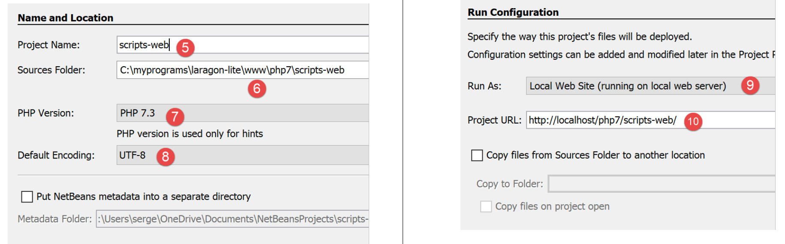
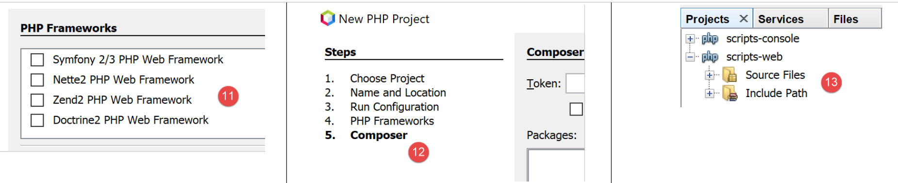
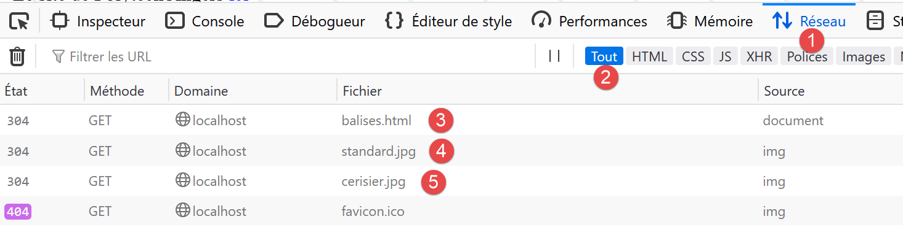
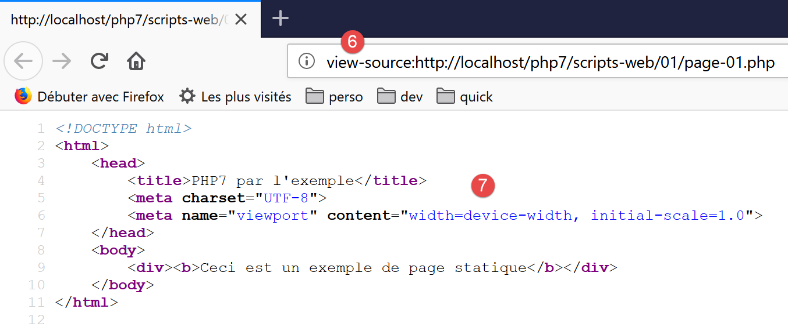
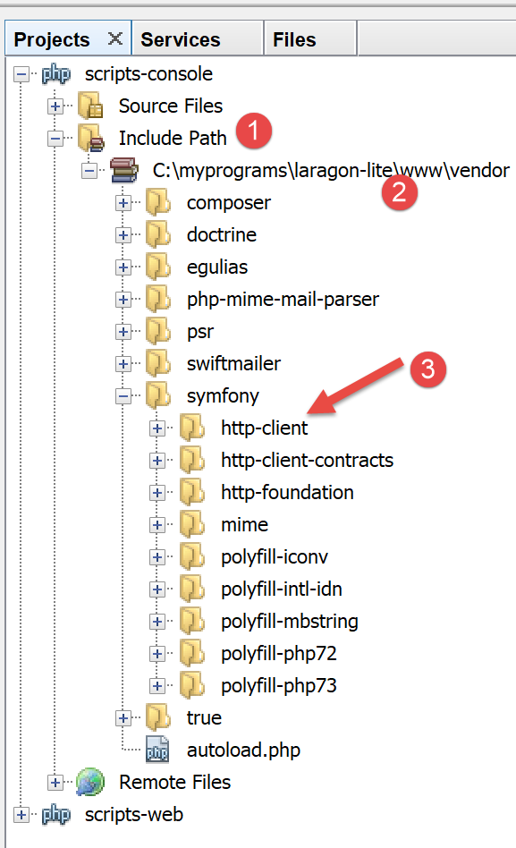
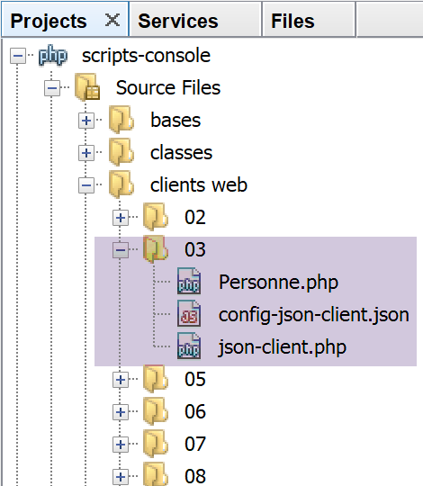
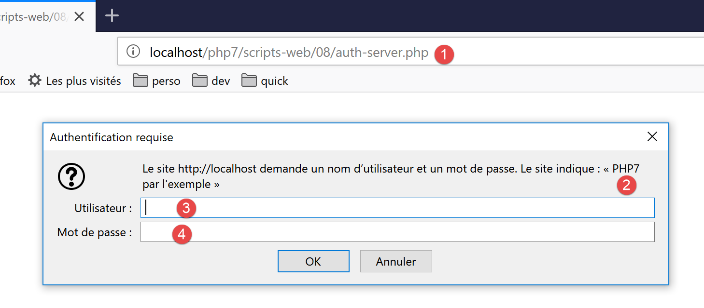

17. Servizi web
Nota: per “servizio web” si intende in questo contesto qualsiasi applicazione web che fornisce dati grezzi utilizzati da un client, ovvero uno script da console negli esempi che seguiranno. Non ci interessano tecnologie specifiche, come ad esempio REST (REpresentational State Transfer) o SOAP (Simple Object Access Protocol), che forniscono dati più o meno grezzi in un formato ben definito. REST fornisce jSON, mentre per SOAP si tratta di XML. Ciascuna di queste tecnologie descrive con precisione il modo in cui il client deve interrogare il server e la forma che deve assumere la risposta di quest’ultimo. In questo corso saremo molto più flessibili riguardo alla natura della richiesta del client e a quella della risposta del server. Tuttavia, gli script scritti e gli strumenti utilizzati sono simili a quelli della tecnologia REST.
17.1. Introduction
Poiché i programmi PHP possono essere eseguiti da un server WEB, un programma di questo tipo diventa un programma server in grado di servire più client. Dal punto di vista del client, richiamare un servizio web equivale a richiedere l’URL di tale servizio. Il client può essere scritto in qualsiasi linguaggio, in particolare in PHP. In quest’ultimo caso, si utilizzano quindi le funzioni di rete che abbiamo appena visto. Dobbiamo inoltre sapere come “comunicare” con un servizio web, ovvero comprendere il protocollo http di comunicazione tra un server WEB e i suoi client. Questo era l’obiettivo del paragrafo link.
Il client web descritto nel paragrafo «link» ci ha permesso di scoprire una parte del protocollo HTTP.

Nella loro versione più semplice, gli scambi client/server sono i seguenti:
- il client apre una connessione con la porta 80 del server web;
- effettua una richiesta relativa a un documento;
- il server web invia il documento richiesto e chiude la connessione;
- il client chiude a sua volta la connessione;
Il documento può essere di varia natura: un testo in formato HTML, un'immagine, un video... Può trattarsi di un documento esistente (documento statico) oppure di un documento generato al volo da uno script (documento dinamico). In quest'ultimo caso, si parla di programmazione web. Lo script per la generazione dinamica dei documenti può essere scritto in diversi linguaggi: PHP, Python, Perl, Java, Ruby, C#, VB.net…
Di seguito utilizzeremo script PHP per generare dinamicamente documenti di testo.

- in [1], il client apre una connessione con il server, richiede uno script PHP, inviando o meno dei parametri a tale script;
- in [2], il server web fa eseguire lo script PHP tramite l'interprete PHP. Lo script genera un documento che viene inviato al client [3];
- il server chiude la connessione. Anche il client fa lo stesso;
Il server web può gestire più client contemporaneamente.
Con il pacchetto software [Laragon], il server web è un server Apache, un server open source della Apache Foundation (http://www.apache.org/). Nelle applicazioni che seguono, è necessario avviare [Laragon]:

Questo avvia il server web Apache insieme a SGBD e MySQL.
Gli script eseguiti dal server web saranno scritti con lo strumento NetBeans. Finora abbiamo scritto script PHP eseguiti in un contesto da console:

L'utente utilizza la console per richiedere l'esecuzione di uno script PHP e riceverne i risultati.
Nelle applicazioni client/server che seguiranno:
- lo script del client viene eseguito in un contesto da console;
- lo script del server viene eseguito in un contesto web;

Lo script PHP del server non può trovarsi in una posizione qualsiasi del file system. Infatti, il server web cerca i documenti statici e dinamici richiesti in posizioni specificate dalla configurazione. La configurazione predefinita di Laragon prevede che i documenti vengano cercati nella cartella <Laragon>/www, dove <Laragon> è la cartella di installazione di Laragon. Pertanto, se un client web richiede un documento D con il percorso URL [http://localhost/D], il server web fornirà il documento D con il percorso [<Laragon>/www/D].
Negli esempi che seguono, inseriremo gli script del server nella cartella [www/php7/scripts-web]. Se uno script del server si chiama S.php, verrà richiesto al server web con il percorso URL [http://localhost/php7/scripts-web/S.php]. Verrà quindi restituito il documento [<Laragon>/www/php7/scripts-web/S.php].

- in [1], la cartella [<laragon>/www];
- in [2], la cartella [php7/scripts-web];
Per creare script server con NetBeans, procederemo come segue:

- da [1-2], creiamo un nuovo progetto
- in [3-4], selezioniamo la categoria [PHP] e il progetto [PHP Application]

- in [5], il nome del progetto;
- in [6], la cartella del progetto nel file system. Si noti che questa si trova nella cartella [<laragon>/www], dove deve essere;
- in [7-8], accettare i valori predefiniti proposti;
- in [9-10], accettare i valori predefiniti proposti. In [10], notare che gli script che inseriremo in questo progetto inizieranno con il percorso URL;

- in [11], vi vengono proposti dei framework web scritti in PHP. Questi framework sono indispensabili non appena l’applicazione web acquista una certa dimensione;
- in [12], è possibile aggiungere librerie PHP utilizzando lo strumento [Composer]. Abbiamo utilizzato questo strumento due volte in una finestra [Terminal] di Laragon:
- per installare la libreria [SwiftMailer] che consente di inviare e-mail;
- per installare la libreria [php-mime-mail-parser] che consente di leggere le e-mail;
- in [13], una volta confermata la procedura guidata di creazione del progetto, questo appare in [13] nella scheda dei progetti;
17.2. Creazione di una pagina statica
Nota: per proseguire, è necessario che [Laragon] sia in esecuzione.
Mostreremo come creare una pagina statica HTML (HyperText Markup Language) utilizzando NetBeans:

- in [1-5], creiamo una cartella denominata [01];


- da [6-12], creiamo un file HTML [exemple-01.html];
Il file [exemple-01.html] viene generato già precompilato come segue (maggio 2019):
<!DOCTYPE html>
<!--
To change this license header, choose License Headers in Project Properties.
To change this template file, choose Tools | Templates
and open the template in the editor.
-->
<html>
<head>
<title>TODO supply a title</title>
<meta charset="UTF-8">
<meta name="viewport" content="width=device-width, initial-scale=1.0">
</head>
<body>
<div>TODO write content</div>
</body>
</html>
Modifichiamo il suo contenuto come segue:
<!DOCTYPE html>
<html>
<head>
<title>PHP7 par l'exemple</title>
<meta charset="UTF-8">
<meta name="viewport" content="width=device-width, initial-scale=1.0">
</head>
<body>
<div><b>Ceci est un exemple de page statique</b></div>
</body>
</html>
Abbiamo modificato il titolo della pagina (riga 4) e il suo contenuto (riga 9).
Ora visualizziamo questa pagina HTML tramite il server Apache di Laragon:

- in [1-2], facciamo visualizzare la pagina tramite il server Apache di Laragon;
- in [3], l’URL della pagina visualizzata;
- in [4], il titolo che abbiamo modificato;
- in [5], il contenuto che abbiamo modificato;
La pagina visualizzata è una pagina statica: è possibile caricarla tutte le volte che si vuole nel browser (F5), ma viene sempre visualizzato lo stesso contenuto.
La maggior parte dei browser consente di accedere ai dati scambiati tra il client e il server, quelli descritti nel paragrafo «link». Con il browser Firefox (maggio 2019), è necessario digitare F12 per accedere a questi dati:

Come indicato in [1], ricarichiamo la pagina (F5):

- in [2], il documento caricato dal browser: lo selezioniamo;

- in [5], il documento da analizzare è selezionato;
- in [3-4], richiediamo di visualizzare gli scambi client/server;
- in [6], tali scambi;

- in [7], si seleziona la scheda delle intestazioni;
- in [8], l’URL richiesto dal browser;
- in [9], il comando inviato al server è [GET http://localhost/php7/scripts-web/01/exemple-01.html HTTP/1.1];
- in [10], le intestazioni HTTP inviate successivamente dal browser (il client);
- in [11], le intestazioni HTTP della risposta del server;

- in [12-14], la risposta del server inviata dopo le intestazioni HTTP;
- in [14], si vede che il browser client ha ricevuto la pagina HTML che abbiamo creato. Ha quindi interpretato questo codice per visualizzare quanto segue:

17.3. Creazione di una pagina dinamica in PHP
Ora scriviamo una pagina dinamica in PHP:


- in [1-8], creiamo una pagina [exemple-01.php];
Il file [exemple-01.php] viene generato già precompilato come segue (maggio 2019):
<!DOCTYPE html>
<!--
To change this license header, choose License Headers in Project Properties.
To change this template file, choose Tools | Templates
and open the template in the editor.
-->
<html>
<head>
<meta charset="UTF-8">
<title></title>
</head>
<body>
<?php
// inserisci qui il tuo codice
?>
</body>
</html>
Modifichiamo il codice sopra riportato come segue:
<!DOCTYPE html>
<html>
<head>
<meta charset="UTF-8">
<title>Exemple de page dynamique</title>
</head>
<body>
<?php
// tempo: numero di millisecondi tra il momento attuale e il 01/01/1970
// formato di visualizzazione data-ora
// d: giorno a 2 cifre
// m: mese a due cifre
// y: anno a 2 cifre
// H: ora 0,23
// I: minuti
// s: secondi
print "<b>Date et heure du jour : </b>" . date("d/m/y H:i:s", time());
?>
</body>
</html>
Commenti
- riga 5: abbiamo modificato il titolo della pagina;
- riga 17: scrive la data e l'ora attuali;
In sostanza, lo script PHP sopra riportato scrive l'ora corrente sulla console. Tuttavia, quando viene eseguito da un server web, il flusso di output dell’istruzione [print], che solitamente è associato alla console di esecuzione dello script, viene reindirizzato qui verso la connessione che collega il server al suo client. Pertanto, in un contesto web, lo script sopra riportato invia l’ora corrente sotto forma di testo al client, in questo caso un browser.
Eseguiamo lo script [exemple-01.php]:

- in [3], l’URL richiesto al server web Apache;
- in [4], il titolo della pagina che abbiamo modificato;
- in [5], il contenuto generato dall’istruzione [print];
Si tratta di una pagina dinamica poiché, se la si ricarica più volte nel browser (F5), il suo contenuto cambia (l’ora cambia).
Il browser ha ricevuto un flusso HTML. Per conoscerlo, è necessario visualizzare il codice sorgente della pagina nel browser:

- per visualizzare il menu [1], fare clic con il tasto destro del mouse sulla pagina nel browser;
- in [2], l’URL della pagina [exemple-01.php] ma preceduto da [view-source :] [3];
- in [4], il contenuto HTML che il browser ha visualizzato;
È quindi importante ricordare che uno script PHP destinato ad essere eseguito da un server web deve generare un flusso HTML.
Esaminiamo ora (F12) le intestazioni HTTP inviate dal server al browser client:

- in [3], un'intestazione HTTP che non era presente quando è stata richiesta la pagina statica. Questa intestazione indica che la risposta del server è stata generata da uno script PHP;
Abbiamo visto che la risposta (il flusso HTML in questo caso) del server poteva essere generata da uno script PHP. Lo script può anche generare le intestazioni HTTP e praticamente tutti gli elementi della risposta del server.
17.4. Nozioni di base sul linguaggio HTML
Questo capitolo non si soffermerà sulla programmazione in WEB. Un’applicazione web MVC è descritta nel paragrafo link. Questo capitolo si concentra piuttosto sui servizi web: pagine PHP che forniscono, tramite un server web, dati destinati ad altri client PHP. Tuttavia, ci è sembrato utile fornire al lettore alcune nozioni di base su HTML.
Un browser web può visualizzare vari tipi di documenti, il più comune dei quali è il documento HTML (HyperText Markup Language). Si tratta di un testo formattato con tag della forma <balise>texte</balise>. Pertanto, il testo <b>important</b> visualizzerà il testo important in grassetto. Esistono tag singoli, come il tag <hr/> che visualizza una linea orizzontale. Non esamineremo i tag che si possono trovare in un testo HTML. Esistono numerosi software WYSIWYG che consentono di creare una pagina WEB senza scrivere una sola riga di codice HTML. Questi strumenti generano automaticamente il codice HTML di un layout realizzato con il mouse e controlli predefiniti. È quindi possibile inserire (con il mouse) una tabella nella pagina e poi consultare il codice HTML generato dal software per scoprire i tag da utilizzare per definire una tabella in una pagina WEB. Non è più complicato di così. Inoltre, la conoscenza del linguaggio HTML è indispensabile, poiché le applicazioni web dinamiche devono generare autonomamente il codice HTML da inviare ai client WEB. Questo codice viene generato dal programma e, ovviamente, è necessario sapere cosa generare affinché il client riceva la pagina web desiderata.
In sintesi, non è affatto necessario conoscere l’intero linguaggio HTML per iniziare a programmare per il web. Tuttavia, tale conoscenza è necessaria e può essere acquisita utilizzando software WYSIWYG per la creazione di pagine WEB, come DreamWeaver e decine di altri. Un altro modo per scoprire le sottigliezze del linguaggio HTML è navigare sul web e visualizzare il codice sorgente delle pagine che presentano caratteristiche interessanti e ancora sconosciute.
Consideriamo il seguente esempio che presenta alcuni elementi che si possono trovare in un documento WEB, quali:
- una tabella;
- un'immagine;
- un link.

Un documento HTML ha la seguente struttura generale:
<html> <head> <title>Un titolo</title> ... </head> <attributi body> ... </body></html>
L'intero documento è racchiuso tra i tag <html>…</html>. È composto da due parti:
- <head>…</head>: è la parte non visibile del documento. Fornisce informazioni al browser che visualizzerà il documento. Spesso contiene il tag <title>…</title>, che definisce il testo che verrà visualizzato nella barra del titolo del browser. Può contenere anche altri tag, in particolare quelli che definiscono le parole chiave del documento, parole chiave che verranno poi utilizzate dai motori di ricerca. In questa parte si possono trovare anche degli script, scritti per lo più in JavaScript o VBScript, che verranno eseguiti dal browser.
- <body attributi>…</body>: è la parte che verrà visualizzata dal browser. I tag HTML contenuti in questa sezione indicano al browser l’aspetto visivo “desiderato” per il documento. Ogni browser interpreterà questi tag a modo suo. Due browser possono quindi visualizzare in modo diverso lo stesso documento web. Questo rappresenta solitamente uno dei grattacapi dei web designer.
Il codice HTML del nostro documento di esempio è il seguente:
<!DOCTYPE html>
<html xmlns="http://www.w3.org/1999/xhtml">
<head>
<meta http-equiv="Content-Type" content="text/html; charset=utf-8" />
<title>Quelques balises HTML</title>
</head>
<body style="background-image: url(images/standard.jpg)">
<h1 style="text-align: left">Quelques balises HTML</h1>
<hr />
<table border="1">
<thead>
<tr>
<th>Colonne 1</th>
<th>Colonne 2</th>
<th>Colonne 3</th>
</tr>
</thead>
<tbody>
<tr>
<td>cellule(1,1)</td>
<td style="text-align: center;">cellule(1,2)</td>
<td>cellule(1,3)</td>
</tr>
<tr>
<td>cellule(2,1)</td>
<td>cellule(2,2)</td>
<td>cellule(2,3</td>
</tr>
</tbody>
</table>
<br/><br/>
<table border="0">
<tr>
<td>Une image</td>
<td>
<img border="0" src="images/cerisier.jpg"/></td>
</tr>
<tr>
<td>Le site de Polytech'Angers</td>
<td><a href="http://www.polytech-angers.fr/fr/index.html">ici</a></td>
</tr>
</table>
</body>
</html>
tag ed esempi HTML | |
<title>Alcuni tag HTML</title> (riga 5) il testo [Quelques balises HTML] apparirà nella barra del titolo del browser che visualizzerà il documento | |
<hr />: visualizza una linea orizzontale (riga 10) | |
<attributi tabella>….</table>: per definire la tabella (righe 12, 32) <thead>…</thead>: per definire le intestazioni delle colonne (righe 13, 19) <tbody>…</tbody>: per definire il contenuto della tabella (righe 20, 31) <tr attributi>…</tr>: per definire una riga (righe 21, 25) <td attributi>…</td>: per definire una cella (riga 22) esempi: <table border="1">…</table>: l’attributo border definisce lo spessore del bordo della tabella <td style="text-align: center;">cella(1,2)</td> (riga 23): definisce una cella il cui contenuto sarà cella(1,2). Questo contenuto sarà centrato orizzontalmente (text-align: center). | |
<img border="0" src="images/cerisier.jpg"/> (riga 38): definisce un'immagine senza bordo (border="0") il cui file sorgente è [images/cerisier.jpg] sul server web (src="images/cerisier.jpg"). Questo link si trova in un documento web generato con URL http://localhost/php7/scripts-web/01/balises.html. Pertanto, il browser richiederà il file URL http://localhost/php7/scripts-web/01/images/cerisier.jpg per ottenere l'immagine qui referenziata. | |
<a href="http://www.polytech-angers.fr/fr/index.html">qui</a> (riga 42): fa sì che il testo ici funga da link verso l'URL http://www.polytech-angers.fr/fr/index.html. | |
<body style="background-image: url(images/standard.jpg)"> (riga 8): indica che l'immagine da utilizzare come sfondo della pagina si trova all'indirizzo URL [images/standard.jpg] sul server WEB. Nel contesto del nostro esempio, il browser richiederà l'URL http://localhost/php7/scripts-web/01/images/standard.jpg per ottenere questa immagine di sfondo. |
Da questo semplice esempio si evince che, per costruire l’intero documento, il browser deve effettuare tre richieste al server:
- http://localhost/php7/scripts-web/01/images/balises.html per ottenere il codice sorgente HTML del documento
- http://localhost/php7/scripts-web/01/images/cerisier.jpg per ottenere l'immagine cerisier.jpg
- http://localhost/php7/scripts-web/01/images/standard.jpg per ottenere l'immagine di sfondo standard.jpg
È quanto emerge dagli scambi di rete tra il client e il server (F12 nel browser):

- in [3-5] si vedono le tre richieste effettuate dal browser;
17.5. Rendere dinamica una pagina statica
Vediamo come possiamo rendere dinamica la pagina HTML [exemple-01.html]. Copiamo il contenuto

Abbiamo copiato il contenuto di [exemple-01.html] nel file [page-01.php]. Se eseguiamo lo script web [2], nel browser otteniamo quanto segue:

- in [3], il URL richiesto;
- in [4], il titolo della pagina;
- in [5], il contenuto della pagina;
Se si visualizza il codice ricevuto dal browser, si trova quanto segue:

- in [7], si trova il codice HTML inserito nello script [exemple-01.php]
L'interprete PHP ha interpretato lo script [page-01.php] e ha generato lo stesso flusso HTML della pagina statica [exemple-01.html]. Nello script [page-01.php] non era presente alcun PHP, ma solo HTML. Da ciò si deduce quanto segue: quando l’interprete PHP trova del codice HTML in uno script PHP, non lo modifica e lo invia così com’è al client.
Ora inseriamo alcune istruzioni PHP nello script [page-01.php] affinché l’interprete PHP abbia qualcosa da fare:
<!DOCTYPE html>
<html>
<head>
<title><?php print $page->title ?></title>
<meta charset="UTF-8">
<meta name="viewport" content="width=device-width, initial-scale=1.0">
</head>
<body>
<div><b><?php print $page->contents ?></b></div>
</body>
</html>
Nelle righe 4 e 9 abbiamo inserito il codice PHP per generare dinamicamente il titolo e il contenuto della pagina. Partiamo dall’ipotesi che la variabile [$page] sia un oggetto contenente i dati da visualizzare.
Se eseguiamo questo nuovo codice, nel browser otteniamo il seguente risultato:

- in [1], il URL richiesto;
- in [2], il titolo della pagina non è stato visualizzato perché la variabile [$page] non era definita;
- in [3], lo stesso vale per il contenuto;
Ora scriviamo il seguente script web [exemple-02.php]:

Lo script [exemple-02.php] sarà il seguente:
<?php
// si definiscono gli elementi della pagina da visualizzare
$page=new \stdclass();
$page->title="Un nouveau titre";
$page->contents="Un nouveau contenu généré dynamiquement";
// si visualizza [page-01]
require_once "page-01.php";
- righe 4-6: si definisce l’oggetto [$page];
- riga 8: si include lo script [page-01.php]. Il codice di questo script verrà a sua volta interpretato:
- la variabile [$page] è ora definita e l’interprete PHP la utilizzerà;
- il codice HTML di [page-01.php] verrà inviato così com'è al client;
- i risultati delle operazioni PHP e [print] saranno inclusi nel flusso di testo inviato al client;
Ora, se eseguiamo lo script web [exemple-02.php], nel browser otteniamo quanto segue:

Se visualizziamo il contenuto testuale ricevuto dal browser:

- i codici PHP, che erano [2] e [3], sono stati sostituiti dai risultati dei due comandi [print];
Da questo esempio si possono trarre due conclusioni:
- le pagine HTML destinate al browser possono essere isolate in script PHP contenenti solo questo codice HTML e alcune parti dinamiche generate dal codice PHP. In queste pagine deve esserci il minor numero possibile di PHP;
- tutta la logica che genera i dati dinamici inclusi nelle pagine HTML deve essere isolata in script PHP puri, privi di qualsiasi codice di presentazione delle pagine (HTML, CSS, Javascript…);
Ciò consente una separazione dei compiti:
- il compito di realizzazione delle pagine web da visualizzare (HTML, CSS, Javascript…);
- il compito relativo alla logica dell’applicazione web che stiamo realizzando. Tale logica potrà essere implementata con un’architettura a tre livelli, esattamente come abbiamo fatto con gli script da console;
Successivamente, realizzeremo script web specifici;
- questi invieranno al client solo dati e nessuna formattazione (HTML, CSS, Javascript). Si tratterà quindi di server di dati piuttosto che di pagine web;
- i client di questi script web saranno script da console che si occuperanno di recuperare i dati inviati dal server e di elaborarli;
17.6. Applicazione client/server per data e ora
Ci troviamo ora nella seguente configurazione:

Scriveremo:
- uno script web [1] che invia al proprio client la data e l’ora correnti;
- uno script da console [2] che fungerà da client dello script web: recupererà la data e l’ora inviate dallo script web e le visualizzerà sulla console;

- in [1], lo script web [date-time-server.php];
- in [2], lo script da console [date-time-client], client dello script web;
17.6.1. Lo script server
Abbiamo già scritto uno script web che genera la data e l’ora attuali nel paragrafo relativo al link. Si trattava del seguente script [exemple-01.php]:
<!DOCTYPE html>
<html>
<head>
<meta charset="UTF-8">
<title>Exemple de page dynamique</title>
</head>
<body>
<?php
// time: numero di millisecondi dal 01/01/1970
// formato di visualizzazione data-ora
// d: giorno a 2 cifre
// m: mese a 2 cifre
// y: anno a 2 cifre
// H: ora 0,23
// i: minuti
// s: secondi
print "<b>Date et heure du jour : </b>" . date("d/m/y H:i:s", time());
?>
</body>
</html>
Abbiamo detto che avremmo scritto degli script server per i dati: dati grezzi senza formattazione HTML. Lo script server [date-time-server.php] sarà quindi il seguente:
<?php
// si imposta l'intestazione HTP [Content-Type]
header('Content-Type: text/plain; charset=UTF-8');
//
// si inviano data e ora
// time: numero di millisecondi dal 01/01/1970
// formato di visualizzazione data-ora
// d: giorno a 2 cifre
// m: mese a 2 cifre
// y: anno a 2 cifre
// H: ora 0,23
// i: minuti
// s: secondi
print date("d/m/y H:i:s", time());
- riga 4: si imposta l’intestazione HTTP [Content-Type] che indica al client la natura del documento che riceverà. Finora, il [Content-Type] era: [Content-Type: text/html; charset=UTF-8]. Qui indichiamo al client che il documento è testo senza formattazione HTML. Questo non è importante per il nostro client console, che non cercherà di utilizzare questa intestazione. È più importante per i browser client, che invece utilizzano questa intestazione;
Eseguiamo questo script lato server:

Se esaminiamo nel browser la risposta del server (F12), vediamo in [5] l’intestazione HTTP che lo script del server ha impostato e in [8] il documento di testo ricevuto;

17.6.2. Lo script client
Nel paragrafo dedicato ai collegamenti abbiamo sviluppato diversi client HTTP. Potremmo utilizzarli per recuperare il documento di testo inviato dallo script del server [date-time-server.php]. Non lo faremo. Come abbiamo fatto per i protocolli SMTP e IMAP, utilizzeremo una libreria di terze parti, ovvero il componente [HttpClient] del framework Symfony [https://symfony.com/doc/master/components/http_client.html].
Come per le due librerie precedenti, utilizzeremo lo strumento [Composer] per installare il componente [HttpClient] di Symfony. In una finestra [Terminal] di Laragon (vedi paragrafo sul link), digitiamo il seguente comando:

- in [3], verificare di trovarsi nella cartella [<laragon>/www/], dove <laragon> è la cartella di installazione di Laragon;
- in [4], il comando [composer] che installa la libreria [HttpClient] di Symfony;
- in [5] non viene installato nulla poiché la libreria [HttpClient] era già stata installata su questo computer;
- nel comando [6-7], compaiono nuove cartelle in [<laragon>/www/vendor/symfony];
Al posto di [5], dovreste avere qualcosa di simile a quanto segue:
C:\myprograms\laragon-lite\www
? composer require symfony/http-client
Using version ^4.3 for symfony/http-client
./composer.json has been updated
Loading composer repositories with package information
Updating dependencies (including require-dev)
Package operations: 4 installs, 0 updates, 0 removals
- Installing symfony/polyfill-php73 (v1.11.0): Downloading (100%)
- Installing symfony/http-client-contracts (v1.1.1): Downloading (100%)
- Installing psr/log (1.1.0): Loading from cache
- Installing symfony/http-client (v4.3.0): Downloading (100%)
Writing lock file
Generating autoload files
Assicuratevi che la cartella [<laragon>/www/vendor] faccia parte del ramo [Include Path] del vostro progetto (cfr. paragrafo "link"):

Fatto ciò, possiamo scrivere lo script da console [date-time-client.php]:

Lo script da console [date-time-client.php] utilizzerà il seguente file jSON [config-date-time-client.json]:
- riga 2: l’URL dello script del server;
Lo script client [date-time-client.php] sarà il seguente:
<?php
// cliente del servizio data/ora
//
// gestione degli errori
//ini_set("error_reporting", E_ALL & ~ E_WARNING & ~E_DEPRECATED & ~E_NOTICE);
//ini_set("display_errors", "off");
//
// dipendenze
require_once 'C:/myprograms/laragon-lite/www/vendor/autoload.php';
use Symfony\Component\HttpClient\HttpClient;
// configurazione del client
const CONFIG_FILE_NAME = "config-date-time-client.json";
// si recupera la configurazione
if (!file_exists(CONFIG_FILE_NAME)) {
print "Le fichier de configuration [" . CONFIG_FILE_NAME . "] n'existe pas\n";
exit;
}
if (!$config = \json_decode(\file_get_contents(CONFIG_FILE_NAME), true)) {
print "Erreur lors de l'exploitation du fichier de configuration jSON [" . CONFIG_FILE_NAME . "]\n";
exit;
}
// si crea un cliente HTTP
$httpClient = HttpClient::create();
try {
// si effettua la richiesta
$response = $httpClient->request('GET', $config['url']);
// stato della risposta
$statusCode = $response->getStatusCode();
print "---Réponse avec statut : $statusCode\n";
// si recuperano le intestazioni
print "---Entêtes de la réponse\n";
$headers = $response->getHeaders();
foreach ($headers as $type => $value) {
print "$type: " . $value[0] . "\n";
}
// si recupera il corpo della risposta
$content = $response->getContent();
// lo si visualizza
print "---Réponse du serveur : [$content]\n";
} catch (TypeError | RuntimeException $ex) {
// viene visualizzato l'errore
print "Erreur de communication avec le serveur : " . $ex->getMessage() . "\n";
exit;
}
Commenti
- riga 10: come abbiamo fatto per le librerie precedenti, carichiamo il file [<laragon>/www/vendor/autoload.php];
- riga 11: dichiariamo la classe [HttpClient] che utilizzeremo;
- righe 13-24: recuperiamo la configurazione dello script dal dizionario [$config];
- riga 27: creiamo un oggetto di tipo [HttpClient];
- riga 31: si richiede l'URL dello script del server utilizzando un comando GET: [GET URL HTTTP/1.1]. Questa operazione è asincrona. L'esecuzione prosegue alla riga 33 senza attendere che venga ricevuta la risposta;
- riga 33: si richiede lo stato della risposta. Tale stato si trova nella prima intestazione HTTP restituita dal server. Pertanto, se tale intestazione è [HTTP/1.1 200 OK], lo stato della risposta è 200. Questa operazione è bloccante: si torna indietro solo quando il client ha ricevuto l’intera risposta dal server;
- riga 37: si richiedono le intestazioni HTTP della risposta;
- riga 42: si richiede il documento restituito dal server: sappiamo che in questo caso si tratta di un testo.
- righe 45-49: in caso di errore, viene visualizzato il messaggio di errore;
Quando si esegue lo script client (è necessario che Laragon sia in esecuzione affinché lo script server sia raggiungibile), si ottiene il seguente risultato sulla console:
---Réponse avec statut : 200
---Entêtes de la réponse
date: Thu, 30 May 2019 14:42:03 GMT
server: Apache/2.4.35 (Win64) OpenSSL/1.1.0i PHP/7.2.11
x-powered-by: PHP/7.2.11
content-length: 17
content-type: text/plain; charset=UTF-8
---Réponse du serveur : [30/05/19 14:42:03]
Alla riga 8 si recuperano correttamente la data e l’ora correnti.
Potremmo essere curiosi di sapere cosa ha inviato lo script client al server. A tal fine utilizzeremo il nostro server generico TCP (cfr. paragrafo "link"):

- in [1], la cartella delle utilità;
- in [2], il server TCP viene avviato sulla porta 100;
- in [3], in attesa di un comando digitato dalla tastiera;
Modifichiamo il file di configurazione dello script [date-time-client.php]:
{
"url": "http://localhost:100/php7/scripts-web/02/date-time-server.php"
}
Questa volta, il client contatta il server [localhost] sulla porta 100. Sarà quindi il nostro server generico TCP a ricevere la richiesta. Quando eseguiamo lo script da console [date-time-client.php], la console del server generico TCP si evolve come segue:

- in [3], il comando HTTP GET generato dallo script client;
- in [4], la firma dello script della console;
- in [5], la risposta del server allo script client. Si noti che questa non è una risposta HTTP valida:
- dovrebbero esserci le intestazioni HTTP;
- poi una riga vuota;
- poi il documento di testo inviato al client;
- in [6], si chiude la comunicazione con lo script client affinché quest’ultimo rilevi di aver ricevuto la risposta completa;
Dal lato dello script client, si ottiene la seguente visualizzazione in console:

- in [7], ciò che ha ricevuto il client Symfony;
17.6.3. Lo script server – versione 2
Di base, le funzioni PHP per la scrittura di uno script web non sono orientate agli oggetti. Sul lato server, ci si trova quindi a dover mescolare classi e funzioni PHP classiche. Per ottenere uno stile di scrittura più omogeneo, utilizzeremo la libreria [HttpFoundation] del framework Symfony. Essa ha incapsulato tutte le funzioni PHP classiche per un servizio web in un sistema di classi e interfacce. La documentazione della libreria è disponibile all’indirizzo URL [https://symfony.com/doc/current/components/http_foundation.html] (maggio 2019).
Per installare la libreria, procediamo come segue in un terminale Laragon (vedi paragrafo link):

- [2-3]: assicurarsi di trovarsi nella cartella [<laragon>/www];
- [4]: il comando [composer] che installerà la libreria [HttpFoundation];
- [5]: in questo esempio, la libreria era già installata;
Alla prima installazione, dovreste ottenere dei log della console simili a questi:
C:\myprograms\laragon-lite\www
? composer require symfony/http-foundation
Using version ^4.3 for symfony/http-foundation
./composer.json has been updated
Loading composer repositories with package information
Updating dependencies (including require-dev)
Package operations: 2 installs, 0 updates, 0 removals
- Installing symfony/mime (v4.3.0): Downloading (100%)
- Installing symfony/http-foundation (v4.3.0): Downloading (100%)
Writing lock file
Generating autoload files
La seconda versione del server web [date-time-server-2.php] è la seguente:
<?php
// utilizzo delle librerie di Symfony
// dipendenze
require_once 'C:/myprograms/laragon-lite/www/vendor/autoload.php';
use Symfony\Component\HttpFoundation\Response;
// si imposta l'intestazione Content-Type
$response=new Response();
$response->headers->set("content-type","text/plain");
$response->setCharset("utf-8");
// si imposta il contenuto della risposta
//
// invio di data e ora
// time: numero di millisecondi dal 01/01/1970
// formato di visualizzazione data-ora
// d: giorno a 2 cifre
// m: mese a 2 cifre
// y: anno a 2 cifre
// H: ora 0,23
// i: minuti
// s: secondi
$response->setContent(date("d/m/y H:i:s", time()));
// si invia la risposta
$response->send();
Commenti
- riga 7: la classe [Response] della libreria [HttpFoundation] di Symfony gestisce l'intera risposta ai client del servizio web;
- riga 10: creazione di un'istanza della classe [Response];
- riga 11: si specifica che la risposta è di tipo [text/plain];
- riga 12: la risposta è costituita dal testo UTF-8;
- riga 25: si imposta il documento della risposta, come richiesto dal cliente;
- riga 28: si invia la risposta al cliente;
17.6.4. Lo script client – versione 2
Lo script client rimane invariato. Si modifica solo il suo file di configurazione [config-date-time-client.json]:
I risultati sono gli stessi della versione 1.
17.7. Un server dati jSON
La risposta di uno script web può essere composta da diversi dati che possono essere raggruppati in tabelle e oggetti. Lo script può quindi inviare questi vari elementi all’interno di una stringa jSON che il client decodificherà.

17.7.1. Lo script del server
Lo script [json-server.php] utilizza la seguente classe [Personne]:
<?php
namespace Modèles;
class Personne implements \JsonSerializable {
// attributi
private $nom;
private $prénom;
private $âge;
// conversione di un array associativo in un oggetto [Personne]
public function setFromArray(array $assoc): Personne {
// si inizializza l'oggetto corrente con il array associativo
foreach ($assoc as $attribute => $value) {
$this->$attribute = $value;
}
// risultato
return $this;
}
// getter e setter
public function getNom() {
return $this->nom;
}
public function getPrénom() {
return $this->prénom;
}
public function setNom($nom) {
$this->nom = $nom;
return $this;
}
public function setPrénom($prénom) {
$this->prénom = $prénom;
return $this;
}
public function getÂge() {
return $this->âge;
}
public function setÂge($âge) {
$this->âge = $âge;
return $this;
}
// toString
public function __toString(): string {
return "Personne [$this->prénom, $this->nom, $this->âge]";
}
// implementa l'interfaccia JsonSerializable
public function jsonSerialize(): array {
// restituisce un array associativo con come chiavi gli attributi dell'oggetto
// questo array potrà poi essere codificato in jSON
return get_object_vars($this);
}
// conversione di un jSON in un oggetto [Personne]
public static function jsonUnserialize(string $json): Personne {
// si crea una persona a partire dalla stringa jSON
return (new Personne())->setFromArray(json_decode($json, true));
}
}
Commenti
- riga 5: la classe implementa l'interfaccia PHP [JsonSerializable]. Ciò le impone di implementare il metodo [jsonSerialize] delle righe 55-59. Il metodo deve restituire un array associativo che dovrà essere serializzato in jSON. Quando si utilizza l’espressione [json_encode($personne)], la funzione [json_encode] verifica se la classe [Personne] implementa l’interfaccia [JsonSerializable]. In caso affermativo, l’espressione diventa [json_encode($personne→serialize())];
- righe 12-19: la classe non ha un costruttore, ma un inizializzatore. La classe [Personne] può quindi essere istanziata tramite l’espressione [(new Personne())→setFromArray($array)]. È possibile avere diversi tipi di inizializzatori, mentre si può avere un solo costruttore. Questi inizializzatori consentono diverse modalità di istanziazione del tipo [(new Personne())→initialiseuri(…)];
- righe 62-65: la funzione statica [jsonUnserialize] consente di creare un oggetto [Personne] a partire dalla sua stringa jSON;
Lo script [json-server.php] sarà il seguente:
<?php
// dipendenze
require_once __DIR__ . "/Personne.php";
use \Modèles\Personne;
require_once 'C:/myprograms/laragon-lite/www/vendor/autoload.php';
use \Symfony\Component\HttpFoundation\Response;
// si imposta l'intestazione Content-Type e la libreria di caratteri utilizzata
$response = new Response();
$response->headers->set("content-type", "application/json");
$response->setCharset("utf-8");
// si crea un oggetto Persona
$personne = (new Personne())->setFromArray([
"nom" => "de la Hûche",
"prénom" => "jean-paul",
"âge" => 27]);
// un array associativo
$assoc = ["attr1" => "value1",
"attr2" => [
"prenom" => "Jean-Paul",
"nom" => "de la Hûche"
]
];
// il contenuto della risposta è jSON
$response->setContent(json_encode([$personne, $assoc]));
// invio della risposta
$response->send();
Commenti
- righe 4-5: si importa la classe [Personne];
- riga 11: si specifica che il documento sarà di tipo [application/json]. Alla ricezione di questa intestazione, i browser visualizzeranno una formattazione della stringa jSON anziché visualizzare testo in chiaro;
- riga 12: la stringa jSON conterrà i caratteri UTF-8;
- righe 15-18: si crea un oggetto [Personne];
- righe 20-25: si crea un array associativo a due livelli;
- riga 27: si invia al client la stringa jSON da un array:
- l'elemento [$personne] verrà serializzato in jSON tramite il suo metodo [jsonSerialize];
- l'elemento [$assoc] verrà serializzato in modo nativo in jSON;
Se si esegue questo script sul server (Laragon deve essere in esecuzione), si ottiene la seguente risposta nel browser:


Commenti
- in [2], la risposta jSON formattata;
- in [4], la risposta jSON non formattata. Si noti la codifica dei caratteri accentati;
- in [6], è il tipo di contenuto [application/json] inviato dal server che ha indotto il browser a effettuare questa formattazione;
17.7.2. Il client

Il client [json-client.php] è configurato dal seguente file jSON [config-json-client.json]:
Lo script [json-client.php] è il seguente:
<?php
// cliente di un servizio jSON
//
// gestione degli errori
//ini_set("error_reporting", E_ALL & ~ E_WARNING & ~E_DEPRECATED & ~E_NOTICE);
//ini_set("display_errors", "off");
//
// dipendenze
require_once 'C:/myprograms/laragon-lite/www/vendor/autoload.php';
use Symfony\Component\HttpClient\HttpClient;
require_once __DIR__ . "/Personne.php";
use \Modèles\Personne;
// configurazione del client
const CONFIG_FILE_NAME = "config-json-client.json";
// si recupera la configurazione
if (!file_exists(CONFIG_FILE_NAME)) {
print "Le fichier de configuration [" . CONFIG_FILE_NAME . "] n'existe pas\n";
exit;
}
if (!$config = \json_decode(\file_get_contents(CONFIG_FILE_NAME), true)) {
print "Erreur lors de l'exploitation du fichier de configuration jSON [" . CONFIG_FILE_NAME . "]\n";
exit;
}
// si crea un cliente HTTP
$httpClient = HttpClient::create();
try {
// si effettua la richiesta
$response = $httpClient->request('GET', $config['url']);
// stato della risposta
$statusCode = $response->getStatusCode();
print "---Réponse avec statut : $statusCode\n";
// si recuperano le intestazioni
print "---Entêtes de la réponse\n";
$headers = $response->getHeaders();
foreach ($headers as $type => $value) {
print "$type: " . $value[0] . "\n";
}
// si recupera il corpo jSON della risposta
list($personne, $assoc) = json_decode($response->getContent(), true);
// si istanzia una persona a partire dall'array dei suoi attributi
$personne = (new Personne())->setFromArray($personne);
// si visualizza la risposta del server
print "---Réponse du serveur\n";
print "$personne\n";
print "tableau=" . json_encode($assoc, JSON_UNESCAPED_UNICODE) . "\n";
} catch (TypeError | RuntimeException $ex) {
// si visualizza l'errore
print "Erreur de communication avec le serveur : " . $ex->getMessage() . "\n";
}
Commenti
- righe 12-13: importazione della classe [Personne];
- riga 30: creazione del client HTTP;
- riga 44: si decodifica la stringa jSON inviata dal server. Si sa che ciò che è stato codificato è un array a due elementi contenente due array associativi;
- riga 46: si crea un oggetto [Personne] per visualizzarlo successivamente alla riga 49;
- riga 50: si visualizza il secondo array associativo. L’istruzione [print] non è in grado di visualizzare gli array. Pertanto, lo si trasforma nella stringa jSON. Per ottenere correttamente i caratteri accentati, è necessario impostare il secondo parametro [JSON_UNESCAPED_UNICODE]. Abbiamo visto che, effettivamente, i caratteri accentati sono codificati nella stringa jSON;
L’esecuzione dello script client fornisce i seguenti risultati:
---Réponse avec statut : 200
---Entêtes de la réponse
date: Sun, 02 Jun 2019 09:56:29 GMT
server: Apache/2.4.35 (Win64) OpenSSL/1.1.0i PHP/7.2.11
x-powered-by: PHP/7.2.11
cache-control: no-cache, private
content-length: 143
connection: close
content-type: application/json
---Réponse du serveur
Personne [jean-paul, de la Hûche, 27]
tableau={"attr1":"value1","attr2":{"prenom":"Jean-Paul","nom":"de la Hûche"}}
Alle righe 11 e 12, i caratteri accentati sono stati recuperati correttamente.
17.8. Recupero delle variabili d’ambiente del servizio web
Uno script server viene eseguito in un ambiente web di cui può essere a conoscenza. Tale ambiente è memorizzato nel dizionario $_SERVER, una variabile globale di PHP. Se utilizziamo la libreria [HttpFoundation], tale ambiente sarà reperibile nel campo [Request→server], dove [Request] è la richiesta HTTP elaborata dallo script web.
17.8.1. Lo script del server
Scriviamo un’applicazione server che invia ai propri client il proprio ambiente di esecuzione.

Lo script web [env-server.php] è il seguente:
<?php
// dipendenze
require_once 'C:/myprograms/laragon-lite/www/vendor/autoload.php';
use \Symfony\Component\HttpFoundation\Response;
use Symfony\Component\HttpFoundation\Request;
// si recupera la richiesta
$request = Request::createFromGlobals();
// si elabora la risposta
$response = new Response();
// il contenuto della risposta è in formato JSON UTF-8
$response->headers->set("content-type", "application/json");
$response->setCharset("utf-8");
// si imposta il contenuto jSON della risposta
$response->setContent(json_encode($request->server->all()));
// invio della risposta
$response->send();
- riga 9: si recupera l’oggetto di tipo [Request] che incapsula tutte le informazioni disponibili sulla richiesta HTTP ricevuta dallo script web, nonché sull’ambiente di esecuzione dello stesso;
- righe 13-14: si invia al client del testo in chiaro contenente i caratteri UTF-8;
- riga 16: l’informazione inviata al client sarà una stringa ottenuta tramite serializzazione jSON dell’oggetto [$request→server→all()]: [$request→server] rappresenta l’ambiente di esecuzione dello script web. Si tratta di un oggetto di tipo [ServerBag], una sorta di dizionario. [$request→server→all()] è invece un vero e proprio dizionario, quello del contenuto di [ServerBag];
- riga 18: si inviano le informazioni;
Se si esegue questo script da NetBeans, il browser visualizza la pagina seguente:

- in [2], le diverse chiavi del dizionario dell'ambiente;
- in [3], i valori di tali chiavi;
17.8.2. Lo script client

Lo script client [env-client.php] è configurato dal seguente file jSON [config-env-client.json]:
Lo script client [env-client.php] è il seguente:
<?php
// ambiente di uno script server
//
// gestione degli errori
//ini_set("error_reporting", E_ALL & ~ E_WARNING & ~E_DEPRECATED & ~E_NOTICE);
//ini_set("display_errors", "off");
//
// dipendenze
require_once 'C:/myprograms/laragon-lite/www/vendor/autoload.php';
use Symfony\Component\HttpClient\HttpClient;
// configurazione del client
const CONFIG_FILE_NAME = "config-env-client.json";
// si recupera la configurazione
if (!file_exists(CONFIG_FILE_NAME)) {
print "Le fichier de configuration [" . CONFIG_FILE_NAME . "] n'existe pas\n";
exit;
}
if (!$config = \json_decode(\file_get_contents(CONFIG_FILE_NAME), true)) {
print "Erreur lors de l'exploitation du fichier de configuration jSON [" . CONFIG_FILE_NAME . "]\n";
exit;
}
// si crea un client HTTP
$httpClient = HttpClient::create();
try {
// si invia la richiesta al server
$response = $httpClient->request('GET', $config['url']);
// stato della risposta
$statusCode = $response->getStatusCode();
print "---Réponse avec statut : $statusCode\n";
// si recuperano le intestazioni
print "---Entêtes de la réponse\n";
$headers = $response->getHeaders();
foreach ($headers as $type => $value) {
print "$type: " . $value[0] . "\n";
}
// si visualizza la risposta del server
print "---Réponse du serveur\n";
$env = json_decode($response->getContent());
foreach ($env as $key => $value) {
print "[$key]=>$value\n";
}
} catch (TypeError | RuntimeException $ex) {
// viene visualizzato l'errore
print "Erreur de communication avec le serveur : " . $ex->getMessage() . "\n";
}
Commenti
- riga 42: si deserializza la risposta jSON dal server. Si ottiene un array associativo;
- righe 43-45: si visualizzano tutti i valori di questo array associativo;
Si ottiene il seguente risultato in console:
---Réponse avec statut : 200
---Entêtes de la réponse
date: Sun, 02 Jun 2019 17:35:50 GMT
server: Apache/2.4.35 (Win64) OpenSSL/1.1.0i PHP/7.2.11
x-powered-by: PHP/7.2.11
cache-control: no-cache, private
content-length: 1505
connection: close
content-type: application/json
---Réponse du serveur
[HTTP_HOST]=>localhost
[HTTP_USER_AGENT]=>Symfony HttpClient/Curl
[HTTP_ACCEPT_ENCODING]=>deflate, gzip
[PATH]=>C:\Program Files (x86)\Mail Enable\BIN;C:\windows\system32;C:\windows;C:\windows\System32\Wbem;C:\windows\System32\WindowsPowerShell\v1.0\;C:\windows\System32\OpenSSH\;C:\Program Files\dotnet\;C:\Program Files\Microsoft SQL Server\130\Tools\Binn\;C:\Program Files (x86)\Mail Enable\BIN64;C:\Users\serge\AppData\Local\Microsoft\WindowsApps;;C:\myprograms\Microsoft VS Code\bin
[SystemRoot]=>C:\windows
[COMSPEC]=>C:\windows\system32\cmd.exe
[PATHEXT]=>.COM;.EXE;.BAT;.CMD;.VBS;.VBE;.JS;.JSE;.WSF;.WSH;.MSC
[WINDIR]=>C:\windows
[SERVER_SIGNATURE]=>
[SERVER_SOFTWARE]=>Apache/2.4.35 (Win64) OpenSSL/1.1.0i PHP/7.2.11
[SERVER_NAME]=>localhost
[SERVER_ADDR]=>::1
[SERVER_PORT]=>80
[REMOTE_ADDR]=>::1
[DOCUMENT_ROOT]=>C:/myprograms/laragon-lite/www
[REQUEST_SCHEME]=>http
[CONTEXT_PREFIX]=>
[CONTEXT_DOCUMENT_ROOT]=>C:/myprograms/laragon-lite/www
[SERVER_ADMIN]=>admin@example.com
[SCRIPT_FILENAME]=>C:/myprograms/laragon-lite/www/php7/scripts-web/04/env-server.php
[REMOTE_PORT]=>63744
[GATEWAY_INTERFACE]=>CGI/1.1
[SERVER_PROTOCOL]=>HTTP/1.1
[REQUEST_METHOD]=>GET
[QUERY_STRING]=>
[REQUEST_URI]=>/php7/scripts-web/04/env-server.php
[SCRIPT_NAME]=>/php7/scripts-web/04/env-server.php
[PHP_SELF]=>/php7/scripts-web/04/env-server.php
[REQUEST_TIME_FLOAT]=>1559496950.644
[REQUEST_TIME]=>1559496950
Ecco il significato di alcune delle variabili (per Windows. Su Linux sarebbero diverse):
il valore xxx dell’intestazione HTTP [Host: xxx] inviata dal client | |
il valore xxx dell’intestazione HTTP [User_Agent: xxx] inviata dal client | |
il valore xxx dell’intestazione HTTP [Accept-Encoding: xxx] inviata dal cliente | |
il percorso degli eseguibili sul computer su cui viene eseguito lo script del server | |
il percorso dell'interprete di comandi DOS | |
le estensioni dei file eseguibili | |
la cartella di installazione di Windows | |
la firma del server web. Qui non c'è nulla. | |
il tipo di server web | |
il nome Internet del computer del server web | |
la porta di ascolto del server web | |
l'indirizzo IP del server web, in questo caso 127:0:0:1 | |
l'indirizzo IP del client. In questo caso il client si trovava sulla stessa macchina del server. | |
la porta di comunicazione del client | |
la radice dell’albero dei documenti forniti dal server web | |
il protocollo TCP della richiesta di URL http://localhost/php7/… | |
l'indirizzo e-mail dell'amministratore del server web | |
il percorso completo dello script del server | |
la porta da cui il client ha effettuato la richiesta | |
la versione del protocollo HTTP utilizzata dal server web | |
l'ordine HTTP utilizzato dal client. Ce ne sono quattro: GET, POST, PUT, DELETE | |
i parametri inviati con un ordine GET /url?parametri | |
la richiesta URL da parte del cliente. Se il browser richiede l'http://machine[:port]/uri URL, si otterrà REQUEST_URI=uri | |
$_SERVER['SCRIPT_FILENAME']=$_SERVER['DOCUMENT_ROOT'].$_SERVER['SCRIPT_NAME'] |
17.9. Recupero da parte del server dei parametri inviati da un client
17.9.1. Introduzione
Nel protocollo HTTP, un client dispone di due metodi per passare i parametri al server WEB:
- richiede il servizio URL nella forma
GET url?param1=val1¶m2=val2¶m3=val3… HTTP/1.0
dove i valori vali devono essere preventivamente sottoposti a codifica affinché alcuni caratteri riservati vengano sostituiti dal loro valore esadecimale;
- richiede il codice URL del servizio nella forma
POST url HTTP/1.0
quindi, tra le intestazioni HTTP inviate al server, inserisce la seguente intestazione:
Content-length=N
La serie di intestazioni inviate dal client termina con una riga vuota. A questo punto può inviare i propri dati nella forma
val1¶m2=val2¶m3=val3…
dove i valori vali devono, come per il metodo GET, essere preventivamente codificati. Il numero di caratteri inviati al server deve essere N, dove N è il valore dichiarato nell’intestazione
Content-length=N
Lo script PHP del servizio web, che recupera i precedenti parametri parami inviati dal client, ne ricava i valori dall’array:
- $_GET["parami"] per un ordine GET;
- $_POST["parami"] per un comando POST;
questo per le funzioni di base di PHP. Se si utilizza la libreria [HttpFoundation], questi parametri si trovano in:
- [Request]->query->get('parami') per un comando GET;
- [Request]->request->get('parami') per un comando POST;
dove [Request] rappresenta tutte le informazioni relative alla richiesta ricevuta dallo script web;
17.9.2. Il client GET – versione 1

Gli script client sono configurati dal seguente file jSON [config-parameters-client.json]:
- riga 1: l’URL dello script web di destinazione dei client GET;
- riga 2: l’URL dello script web di destinazione del client POST;
I client GET inviano tre parametri [nom, prenom, age] al server. Il client [parameters-get-client.php] è il seguente:
<?php
// client GET di un server web
//
// gestione degli errori
//ini_set("error_reporting", E_ALL & ~ E_WARNING & ~E_DEPRECATED & ~E_NOTICE);
//ini_set("display_errors", "off");
//
// dipendenze
require_once 'C:/myprograms/laragon-lite/www/vendor/autoload.php';
use Symfony\Component\HttpClient\HttpClient;
// configurazione del client
const CONFIG_FILE_NAME = "config-parameters-client.json";
// si recupera la configurazione
if (!file_exists(CONFIG_FILE_NAME)) {
print "Le fichier de configuration [" . CONFIG_FILE_NAME . "] n'existe pas\n";
exit;
}
if (!$config = \json_decode(\file_get_contents(CONFIG_FILE_NAME), true)) {
print "Erreur lors de l'exploitation du fichier de configuration jSON [" . CONFIG_FILE_NAME . "]\n";
exit;
}
// si crea un cliente HTTP
$httpClient = HttpClient::create();
try {
// si preparano i parametri
list($prenom, $nom, $age) = array("jean-paul", "de la hûche", 45);
// si codificano le informazioni
$parameters = "prenom=" . urlencode($prenom) .
"&nom=" . urlencode($nom) .
"&age=$age”;
// si invia la richiesta
$response = $httpClient->request('GET', $config['url-get'] . "?$parameters");
// stato della risposta
$statusCode = $response->getStatusCode();
print "---Réponse avec statut : $statusCode\n";
// si recuperano le intestazioni
print "---Entêtes de la réponse\n";
$headers = $response->getHeaders();
foreach ($headers as $type => $value) {
print "$type: " . $value[0] . "\n";
}
// visualizzazione della risposta del server
print "---Réponse du serveur [" . $response->getContent() . "]\n";
} catch (TypeError | RuntimeException $ex) {
// viene visualizzato l'errore
print "Erreur de communication avec le serveur : " . $ex->getMessage() . "\n";
}
Commenti
- righe 33-35: codifica dei parametri inviati al server. I parametri [$prenom, $nom], che possono contenere caratteri UTF-8, vengono codificati con la funzione [urlencode]. Tutti i caratteri non alfanumerici (nel senso delle espressioni relazionali) vengono sostituiti da %xx, dove xx è il valore esadecimale del carattere. Gli spazi vengono invece sostituiti dal segno +;
- riga 37: la stringa URL richiesta è $URL?$parameters, dove $parameters ha la forma nom=val1&prenom=val2&age=val3;
- riga 48: il client si limiterà a visualizzare la risposta del client;
Potremmo essere curiosi di vedere cosa riceve il server quando viene inviata una richiesta GET configurata. A tal fine, avviamo il nostro server generico [RawTcpServer] sulla porta 100 della macchina locale da un terminale Laragon (cfr. paragrafo "link"):

Verificate che in [4] vi troviate effettivamente nella cartella delle utilità.
Modifichiamo il file jSON [parameters-get-client.json] che configura i client GET e POST:
{
"url-get": "http://localhost:100/php7/scripts-web/05/parameters-server.php",
"url-post": "http://localhost/php7/scripts-web/05/parameters-server.php"
}
- riga 2: abbiamo modificato la porta del server web. Verrà quindi contattato [RawTcpServer];
Eseguiamo il client. Nella finestra di [RawTcpServer] otteniamo le seguenti informazioni:

- in [1], il comando GET configurato e inviato dal client. Si nota chiaramente la codifica di alcuni caratteri;
17.9.3. Il server GET / POST

Lo script del server [parameters-server.php] è il seguente:
<?php
// dipendenze
require_once 'C:/myprograms/laragon-lite/www/vendor/autoload.php';
use \Symfony\Component\HttpFoundation\Response;
use Symfony\Component\HttpFoundation\Request;
// si recupera la richiesta
$request = Request::createFromGlobals();
// si recuperano i parametri della richiesta
$getParameters = $request->query->all();
$bodyParameters = $request->request->all();
// si elabora la risposta
$response = new Response();
// il contenuto della risposta è testo UTF-8
$response->headers->set("content-type", "application/json");
$response->setCharset("utf-8");
// contenuto della risposta: una tabella codificata in jSON
$response->setContent(json_encode([
"method" => $request->getMethod(),
"uri" => $request->getRequestUri(),
"getParameters" => $getParameters,
"bodyParameters" => $bodyParameters
], JSON_UNESCAPED_UNICODE));
// invio della risposta
$response->send();
Commenti
- riga 9: creazione dell’oggetto [Request] dello script web. Questo oggetto racchiude tutte le informazioni che lo script web ha ricevuto dal client;
- riga 11: l’oggetto [Request→query] è di tipo [ParameterBag] e raccoglie i parametri dell’eventuale operazione GET di un cliente. L’espressione [Request→query→get(«X»)] consente di ottenere il parametro denominato X tra i parametri di GET [nom=val1&prenom=val2&age=val3]. L’espressione [Request→query→all()] consente di ottenere il dizionario dei parametri dell’operazione GET;
- riga 12: l’oggetto [Request→request] è di tipo [ParameterBag] e raccoglie i parametri inviati come documento dal client al server. Si dice anche che questi parametri siano caricati perché appartengono a un documento che il client invia al server. L’espressione [Request→request→get(«X»)] consente di ottenere il parametro denominato X tra i parametri caricati [nom=val1&prenom=val2&age=val3]. L’espressione [Request→request→all()] consente di ottenere il dizionario dei parametri caricati;
- righe 17-18: si comunica al client che gli verrà inviato jSON codificato in UTF-8;
- righe 20-25: il server restituisce al client tutti i parametri ricevuti, il tipo di operazione [GET / POST / …] eseguita dal client e l’URI richiesta. Questo metodo è ottenuto dall’espressione [$request→getMethod()]. Il documento inviato al cliente è la stringa jSON di un array associativo, alcuni dei cui valori sono a loro volta array associativi. Il parametro [JSON_UNESCAPED_UNICODE] richiede che i caratteri Unicode (come ad esempio i caratteri accentati) vengano inviati così come sono e non codificati;
- riga 27: la risposta viene inviata al client;
L'esecuzione dello script client fornisce i seguenti risultati:
- riga 10:
- [method]: il metodo è GET;
- [uri]: si vedono i parametri URL-encoded della richiesta GET nella richiesta URI;
- [getParameters]: l'array dei parametri di GET;
- [bodyParameters]: la tabella dei parametri caricati: è vuota;
17.9.4. Il client GET – versione 2
Nella versione precedente dello script client, abbiamo effettuato noi stessi la codifica URL dei parametri inviati al server, a scopo didattico. L’oggetto [HttpClient] è in grado di svolgere autonomamente questa operazione. Si tratta del seguente script [parameters-get-client-2.php]:
<?php
// client GET di un server web
//
// gestione degli errori
//ini_set("error_reporting", E_ALL & ~ E_WARNING & ~E_DEPRECATED & ~E_NOTICE);
//ini_set("display_errors", "off");
//
// dipendenze
require_once 'C:/myprograms/laragon-lite/www/vendor/autoload.php';
use Symfony\Component\HttpClient\HttpClient;
// configurazione del client
const CONFIG_FILE_NAME = "config-parameters-client.json";
// si recupera la configurazione
if (!file_exists(CONFIG_FILE_NAME)) {
print "Le fichier de configuration [" . CONFIG_FILE_NAME . "] n'existe pas\n";
exit;
}
if (!$config = \json_decode(\file_get_contents(CONFIG_FILE_NAME), true)) {
print "Erreur lors de l'exploitation du fichier de configuration jSON [" . CONFIG_FILE_NAME . "]\n";
exit;
}
// si crea un cliente HTTP
$httpClient = HttpClient::create();
try {
// si preparano i parametri
list($prenom, $nom, $age) = array("jean-paul", "de la hûche", 45);
// si invia la richiesta al server
$response = $httpClient->request('GET', $config['url-get'],
["query" => [
"prenom" => $prenom,
"nom" => $nom,
"age" => $age
]]);
// stato della risposta
$statusCode = $response->getStatusCode();
print "---Réponse avec statut : $statusCode\n";
// si recuperano le intestazioni
print "---Entêtes de la réponse\n";
$headers = $response->getHeaders();
foreach ($headers as $type => $value) {
print "$type: " . $value[0] . "\n";
}
// visualizzazione della risposta del server
print "---Réponse du serveur [" . $response->getContent() . "]\n";
} catch (TypeError | RuntimeException $ex) {
// viene visualizzato l'errore
print "Erreur de communication avec le serveur : " . $ex->getMessage() . "\n";
}
Commenti
- righe 33-37: aggiunta di parametri alla richiesta GET della riga 32. L’oggetto [HttpClient] si occuperà autonomamente della codifica di URL;
17.9.5. Il client POST
Un client HTTP invia al server web la seguente sequenza di testo: intestazioni HTTP, riga vuota, documento. Nel client precedente, questa sequenza era la seguente:
Non era presente alcun documento. Esiste un altro modo per trasmettere i parametri, il metodo denominato POST. In questo caso, la sequenza di testo inviata al server web è la seguente:
Questa volta, i parametri che nel client GET erano inclusi nelle intestazioni HTTP, nel client POST fanno parte del documento inviato dopo le intestazioni.
Lo script del client POST [parameters-postclient.php] è il seguente:
<?php
// client POST di un server web
//
// gestione degli errori
//ini_set("error_reporting", E_ALL & ~ E_WARNING & ~E_DEPRECATED & ~E_NOTICE);
//ini_set("display_errors", "off");
//
// dipendenze
require_once 'C:/myprograms/laragon-lite/www/vendor/autoload.php';
use Symfony\Component\HttpClient\HttpClient;
// configurazione del client
const CONFIG_FILE_NAME = "config-parameters-client.json";
// si recupera la configurazione
if (!file_exists(CONFIG_FILE_NAME)) {
print "Le fichier de configuration [" . CONFIG_FILE_NAME . "] n'existe pas\n";
exit;
}
if (!$config = \json_decode(\file_get_contents(CONFIG_FILE_NAME), true)) {
print "Erreur lors de l'exploitation du fichier de configuration jSON [" . CONFIG_FILE_NAME . "]\n";
exit;
}
// si crea un cliente HTTP
$httpClient = HttpClient::create();
try {
// si preparano i parametri
list($prenom, $nom, $age) = array("jean-paul", "de la hûche", 45);
// si invia la richiesta al server
$response = $httpClient->request('POST', $config['url-post'],
["body" => [
"prenom" => $prenom,
"nom" => $nom,
"age" => $age
]]);
// stato della risposta
$statusCode = $response->getStatusCode();
print "---Réponse avec statut : $statusCode\n";
// si recuperano le intestazioni
print "---Entêtes de la réponse\n";
$headers = $response->getHeaders();
foreach ($headers as $type => $value) {
print "$type: " . $value[0] . "\n";
}
// visualizzazione della risposta del server
print "---Réponse du serveur [" . $response->getContent() . "]\n";
} catch (TypeError | RuntimeException $ex) {
// viene visualizzato l'errore
print "Erreur de communication avec le serveur : " . $ex->getMessage() . "\n";
}
- riga 32: ora si ha una richiesta HTTP di tipo POST;
- righe 33-37: i parametri di POST sono denominati corpo (body) della richiesta POST: si tratta del documento inviato dal client al server. In questo caso vengono inviati tre parametri [nom, prenom, age];
- riga 48: viene visualizzata la risposta jSON del server;
I risultati dell'esecuzione dello script client sono i seguenti:
---Réponse avec statut : 200
---Entêtes de la réponse
date: Mon, 03 Jun 2019 11:43:02 GMT
server: Apache/2.4.35 (Win64) OpenSSL/1.1.0i PHP/7.2.11
x-powered-by: PHP/7.2.11
cache-control: no-cache, private
content-length: 163
connection: close
content-type: application/json
---Réponse du serveur [{"method":"POST","uri":"\/php7\/scripts-web\/05\/parameters-server.php","getParameters":[],"bodyParameters":{"prenom":"jean-paul","nom":"de la hûche","age":"45"}}]
- riga 10: il metodo è [Post] e i parametri sono di tipo [bodyParameters]. Non ci sono parametri [getParameters], come mostra l’[uri];
Potremmo essere curiosi di vedere cosa riceve il server durante una richiesta POST. A tal fine, avviamo il nostro server generico [RawTcpServer] sulla porta 100 della macchina locale da un terminale Laragon (cfr. paragrafo "link"):
Verificate che in [4] vi troviate effettivamente nella cartella delle utilità.
Modifichiamo il file jSON [config-parameters-client.json] che configura il client POST:
{
"url-get": "http://localhost:100/php7/scripts-web/05/parameters-server.php",
"url-post": "http://localhost:100/php7/scripts-web/05/parameters-server.php"
}
- riga 3: abbiamo modificato la porta del server web. Verrà quindi contattato il client [RawTcpServer];
Eseguiamo il client. Nella finestra di [RawTcpServer] otteniamo le seguenti informazioni:

- in [6], il comando POST;
- in [7]: l’intestazione HTTP [Content-Length] indica il numero di byte del documento che il client invierà al server. L’intestazione HTTP [Content-Type] indica la natura di questo documento. Il tipo [application/x-www-form-urlencoded] indica un testo codificato con URL;
- in [8], la riga vuota che segnala la fine delle intestazioni HTTP e l’inizio del documento di 44 byte. Ciò che non è visibile nella schermata è il documento stesso. Si tratta della stringa codificata in URL dei parametri: [prenom=jean-paul&nom=de+la+h%C3%BBche&age=45]. Il lettore potrà verificare che contenga effettivamente 44 caratteri;
17.9.6. Un client misto POST
In un POST, è possibile combinare i parametri codificati nel URL con quelli codificati nel documento inviato dal client dopo le intestazioni HTTP. Ecco un esempio [parameters-mixte-postclient.php]:
<?php
// client POST di un server web
//
// gestione degli errori
//ini_set("error_reporting", E_ALL & ~ E_WARNING & ~E_DEPRECATED & ~E_NOTICE);
//ini_set("display_errors", "off");
//
// dipendenze
require_once 'C:/myprograms/laragon-lite/www/vendor/autoload.php';
use Symfony\Component\HttpClient\HttpClient;
// configurazione del client
const CONFIG_FILE_NAME = "config-parameters-client.json";
// si recupera la configurazione
if (!file_exists(CONFIG_FILE_NAME)) {
print "Le fichier de configuration [" . CONFIG_FILE_NAME . "] n'existe pas\n";
exit;
}
if (!$config = \json_decode(\file_get_contents(CONFIG_FILE_NAME), true)) {
print "Erreur lors de l'exploitation du fichier de configuration jSON [" . CONFIG_FILE_NAME . "]\n";
exit;
}
// si crea un cliente HTTP
$httpClient = HttpClient::create();
try {
// si preparano i parametri
list($prenom, $nom, $age) = array("jean-paul", "de la hûche", 45);
// si invia la richiesta al server
$response = $httpClient->request('POST', $config['url-post'],
[
// parametri del documento (body)
"body" => [
"prenom" => $prenom,
"nom" => $nom,
"age" => $age
],
// parametri di URL (query)
"query" => [
"prenom2" => $prenom,
"nom2" => $nom,
"age2" => $age
]]);
// stato della risposta
$statusCode = $response->getStatusCode();
print "---Réponse avec statut : $statusCode\n";
// si recuperano le intestazioni
print "---Entêtes de la réponse\n";
$headers = $response->getHeaders();
foreach ($headers as $type => $value) {
print "$type: " . $value[0] . "\n";
}
// visualizzazione della risposta del server
print "---Réponse du serveur [" . $response->getContent() . "]\n";
} catch (TypeError | RuntimeException $ex) {
// visualizzazione dell'errore
print "Erreur de communication avec le serveur : " . $ex->getMessage() . "\n";
}
Commenti
- riga 32: una richiesta POST;
- righe 40-45: i parametri codificati in formato URL in URL;
- righe 35-39: i parametri codificati in formato URL nel corpo (body, documento) della richiesta;
All'esecuzione, si ottengono i seguenti risultati in console:
- riga 10: si nota che il server è riuscito a recuperare entrambi i tipi di parametri;
17.9.7. Un client misto GET
Proviamo a fare la stessa cosa di prima con una richiesta GET. Lo script [parameters-mixte-get-client.php] è il seguente:
<?php
// client POST di un server web
//
// gestione degli errori
//ini_set("error_reporting", E_ALL & ~ E_WARNING & ~E_DEPRECATED & ~E_NOTICE);
//ini_set("display_errors", "off");
//
// dipendenze
require_once 'C:/myprograms/laragon-lite/www/vendor/autoload.php';
use Symfony\Component\HttpClient\HttpClient;
// configurazione del client
const CONFIG_FILE_NAME = "config-parameters-client.json";
// si recupera la configurazione
if (!file_exists(CONFIG_FILE_NAME)) {
print "Le fichier de configuration [" . CONFIG_FILE_NAME . "] n'existe pas\n";
exit;
}
if (!$config = \json_decode(\file_get_contents(CONFIG_FILE_NAME), true)) {
print "Erreur lors de l'exploitation du fichier de configuration jSON [" . CONFIG_FILE_NAME . "]\n";
exit;
}
// si crea un cliente HTTP
$httpClient = HttpClient::create();
try {
// si preparano i parametri
list($prenom, $nom, $age) = array("jean-paul", "de la hûche", 45);
// si invia la richiesta al server
$response = $httpClient->request('GET', $config['url-post'],
[
// parametri del documento (body)
"body" => [
"prenom" => $prenom,
"nom" => $nom,
"age" => $age
],
// parametri di URL (query)
"query" => [
"prenom2" => $prenom,
"nom2" => $nom,
"age2" => $age
]]);
// stato della risposta
$statusCode = $response->getStatusCode();
print "---Réponse avec statut : $statusCode\n";
// si recuperano le intestazioni
print "---Entêtes de la réponse\n";
$headers = $response->getHeaders();
foreach ($headers as $type => $value) {
print "$type: " . $value[0] . "\n";
}
// visualizzazione della risposta del server
print "---Réponse du serveur [" . $response->getContent() . "]\n";
} catch (TypeError | RuntimeException $ex) {
// visualizzazione dell'errore
print "Erreur de communication avec le serveur : " . $ex->getMessage() . "\n";
}
Commenti
- riga 32: una richiesta POST;
- righe 40-45: i parametri codificati in URL nella richiesta URL;
- righe 35-39: i parametri codificati in URL nel corpo (body, documento) della richiesta;
All'esecuzione, si ottengono i seguenti risultati in console:
- riga 10: si nota che il server non ha ricevuto parametri codificati in formato URL nel documento inviato dal client. Osservando le intestazioni HTTP inviate dal client, si nota che quest’ultimo ha effettivamente inviato un documento di 44 caratteri, ma il server non lo ha elaborato;
In definitiva, quale metodo scegliere per inviare informazioni al server?
- il metodo [GET URL?param1=val1¶m2=val2&…] utilizza un URL configurato che può fungere da link. Questo è il suo principale vantaggio: l’utente può aggiungere tali link ai propri segnalibri;
- in altre applicazioni, potrebbe non essere auspicabile visualizzare in un URL i parametri inviati al server. Ad esempio, per motivi di sicurezza. In tal caso, si utilizzerà un metodo [POST] e si inseriranno i parametri codificati tramite URL in un documento inviato al server;
17.10. Gestione delle sessioni web
Negli esempi client/server precedenti il funzionamento era il seguente:
- il client apre una connessione alla porta 80 del server del servizio web;
- invia la sequenza di testo: intestazioni HTTP, riga vuota, [document];
- in risposta, il server invia una sequenza dello stesso tipo;
- il server chiude la connessione con il client;
- il client chiude la connessione al server;
Se lo stesso client effettua poco dopo una nuova richiesta al server web, viene creata una nuova connessione tra il client e il server. Quest’ultimo non può sapere se il client che si connette si è già collegato in precedenza o se si tratta di una prima richiesta. Tra una connessione e l’altra, il server “dimentica” il proprio client. Per questo motivo, si dice che il protocollo HTTP sia un protocollo senza stato. È tuttavia utile che il server ricordi i propri clienti. Infatti, se un’applicazione è protetta, il cliente invierà al server un nome utente e una password per identificarsi. Se il server “dimentica” il proprio cliente tra una connessione e l’altra, quest’ultimo dovrà identificarsi ad ogni nuova connessione, il che non è praticabile.
Per tenere traccia di un cliente, il server procede nel modo seguente: in occasione della prima richiesta di un cliente, include nella sua risposta un identificativo che il cliente dovrà poi rinviargli ad ogni nuova richiesta. Grazie a questo identificativo, diverso per ogni cliente, il server può riconoscere un cliente. Può quindi gestire una memoria per quel cliente sotto forma di una memoria associata in modo univoco all’identificativo del cliente.
Tecnicamente, il processo si svolge in questo modo:
- nella risposta a un nuovo cliente, il server include l’intestazione HTTP Set-Cookie: MotClé=Identificativo. Lo fa solo alla prima richiesta;
- nelle richieste successive, il cliente rinvierà il proprio identificativo tramite l’intestazione HTTP Cookie: MotClé=Identificativo affinché il server lo riconosca;
Ci si potrebbe chiedere come faccia il server a sapere se ha a che fare con un nuovo cliente piuttosto che con uno già presente. È la presenza dell’intestazione HTTP Cookie nelle intestazioni HTTP del cliente a indicarglielo. Per un nuovo cliente, questa intestazione è assente.
L’insieme delle connessioni di un determinato cliente è denominato «sessione».
17.10.1. Il file di configurazione [php.ini]
Affinché la gestione delle sessioni funzioni correttamente con PHP, è necessario verificare che sia configurato correttamente. Su Windows, il suo file di configurazione è php.ini. A seconda del contesto di esecuzione (console, web), il file di configurazione [php.ini] deve essere cercato in cartelle diverse. Per individuarle, si utilizzerà il seguente script:
Alla riga 4, la funzione phpinfo fornisce informazioni sull’interprete PHP che esegue lo script. In particolare, fornisce il percorso del file di configurazione [php.ini] utilizzato.
Abbiamo già utilizzato questo script in un ambiente da console (cfr. paragrafo «link»). In un ambiente web, si ottiene il seguente risultato:

- in [1-2], il file [php.ini] che configura l’interprete degli script web. In questo file si trova una sezione dedicata alla sessione:
- riga 2: i dati di una sessione client vengono salvati in un file;
- riga 3: la cartella in cui vengono salvati i dati di sessione. Se questa cartella non esiste, non viene segnalato alcun errore e la gestione delle sessioni non funziona;
- righe 4-6: indicano che l’identificativo di sessione è gestito dalle intestazioni HTTP, Set-Cookie e Cookie;
- riga 7: l'intestazione Set-Cookie avrà il formato Set-Cookie: PHPSESSID=identifiant_de_session;
- riga 8: una sessione client non viene avviata automaticamente. Lo script del server deve richiederla esplicitamente tramite l'istruzione session_start();
- riga 9: il cookie di sessione è valido finché il browser del cliente non viene chiuso;
- riga 10: il percorso per il quale il cookie di sessione deve essere rinviato. Se [session.cookie_path = /xxx], allora ogni volta che il browser richiede una URL di tipo [/xxx/yyy/zzz], deve rinviare il cookie. In questo caso, il percorso [/] indica che il cookie deve essere rinviato per ogni URL del sito;
- riga 13: alcuni oggetti di sessione devono essere serializzati per poter essere memorizzati in un file. È PHP che garantisce questa serializzazione/deserializzazione con le funzioni [serialize / unserialize];
- riga 16: durata oltre la quale gli oggetti di sessione memorizzati nel file di salvataggio sono considerati obsoleti;
- riga 19: durata di una sessione. Superata tale durata, viene creata una nuova sessione e gli oggetti salvati nella sessione precedente vanno persi;
17.10.2. Esempio 1
17.10.2.1. Il server

La gestione dell'identificativo di sessione è trasparente per un servizio web. Tale identificativo è gestito dal server web. Un servizio web ha accesso alla sessione del cliente tramite l'istruzione session_start(). Da questo momento in poi, il servizio web può leggere/scrivere dati nella sessione del cliente tramite il dizionario $_SESSION. Se si utilizza la libreria [HttpFoundation], la sessione è disponibile tramite l’espressione [Request→getSession].
Il codice seguente [session-server.php] mostra la gestione in sessione di tre contatori. Ad ogni nuova richiesta, lo script web incrementa questi contatori e li inserisce nella sessione in modo che possano essere recuperati durante la richiesta successiva.
<?php
// dipendenze
require_once 'C:/myprograms/laragon-lite/www/vendor/autoload.php';
use \Symfony\Component\HttpFoundation\Response;
use Symfony\Component\HttpFoundation\Request;
use Symfony\Component\HttpFoundation\Session\Session;
//
// si recupera la richiesta
$request = Request::createFromGlobals();
// sessione
$session = new Session();
$session->start();
// si recuperano tre contatori nella sessione
if ($session->has("N1")) {
// incremento del contatore N1
$session->set("N1", (int) $session->get("N1") + 1);
} else {
// il contatore N1 non è presente nella sessione - lo si crea
$session->set("N1", 0);
}
if ($session->has("N2")) {
// incremento del contatore N2
$session->set("N2", (int) $session->get("N2") + 1);
} else {
// il contatore N2 non è in sessione - lo si crea
$session->set("N2", 10);
}
if ($session->has("N3")) {
// incremento del contatore N3
$session->set("N3", (int) $session->get("N3") + 1);
} else {
// il contatore N3 non è in sessione - lo si crea
$session->set("N3", 100);
}
// si elabora la risposta
$response = new Response();
// il contenuto della risposta è testo UTF-8
$response->headers->set("content-type", "application/json");
$response->setCharset("utf-8");
// la risposta sarà jSON, ovvero una tabella contenente i tre contatori
$response->setContent(json_encode([
"N1" => $session->get("N1"),
"N2" => $session->get("N2"),
"N3" => $session->get("N3")]));
// invio della risposta
$response->send();
- riga 10: l’oggetto [$request] incapsula tutte le informazioni relative alla richiesta ricevuta dallo script web;
- righe 12-13: si crea una sessione e la si attiva. L’oggetto [Session] racchiude i dati della sessione corrispondenti al cookie di sessione inviato dal client. Se quest’ultimo non ha inviato tale cookie, allora non vi sono dati memorizzati in [Session]. Lo script web includerà nella sua prima risposta l’intestazione HTTP [Set-Cookie : PHPSESSID=xxx]. Nelle sue richieste successive, il client invierà l’intestazione HTTP [Cookie : PHPSESSID=xxx] per indicare la sessione di cui desidera utilizzare il contenuto. Una sessione è la memoria di un client;
- riga 15: si verifica se la sessione contiene una chiave denominata [N1]. Questo sarà il nome del nostro primo contatore. Se non è presente (riga 20), gli si assegna il valore 0 e lo si inserisce nella sessione. Se è presente (riga 23), si:
- lo recuperiamo dalla sessione;
- ne incrementiamo il valore di 1;
- lo reinseriamo nella sessione;
- righe 22-35: si esegue la stessa operazione per gli altri due contatori N2 e N3;
- righe 36-40: si prepara una risposta di tipo [application/json];
- righe 42-45: la risposta sarà la stringa jSON di un array contenente i tre contatori;
- riga 48: si invia la risposta al client;
Nella relazione client/server, la gestione della sessione del client sul server dipende da entrambi gli attori, il client e il server:
- il server ha il compito di inviare un identificativo al proprio cliente al momento della sua prima richiesta
- il client ha il compito di rinviare tale identificativo ad ogni nuova richiesta. Se non lo fa, il server riterrà che si tratti di un nuovo cliente e genererà un nuovo identificativo per una nuova sessione.
Risultati
Come client utilizziamo un browser web. Per impostazione predefinita (in realtà per configurazione), il browser rinvia correttamente al server gli identificatori di sessione che quest’ultimo gli invia. Man mano che le richieste si susseguono, il browser riceverà i tre contatori inviati dal server e ne vedrà aumentare i valori.

- In [2], la prima richiesta al servizio web;
- in [4], la quarta richiesta mostra che i contatori sono stati effettivamente incrementati. I valori dei contatori vengono effettivamente memorizzati nel corso delle richieste;
Utilizziamo la modalità di sviluppo per visualizzare le intestazioni HTTP scambiate tra il server e il client. Chiudiamo Firefox per terminare la sessione corrente con il server, lo riapriamo e attiviamo la modalità di sviluppo (F12). Ciò eliminerà la sessione corrente del browser, che ne avvierà quindi una nuova. Richiediamo il servizio [session-server.php]:

In [5], si vede l’identificativo di sessione inviato dal server nella sua risposta alla prima richiesta del client. Utilizza l’intestazione HTTP Set-Cookie.
Effettuiamo una nuova richiesta aggiornando (F5) la pagina nel browser web:

In questo caso si notano due cose:
- in [11], il browser web restituisce l’identificativo di sessione con l’intestazione HTTP Cookie.
- In [12], nella sua risposta, il servizio web non include più questo identificativo. Ora spetta al client inviarlo in ogni sua richiesta.
17.10.2.2. Il client
Ora scriviamo uno script client basato sullo script server precedente. Nella gestione della sessione, deve comportarsi come un browser web:
- Nella risposta del server alla sua prima richiesta, deve individuare l'identificativo di sessione che il server gli invia. Sa che lo troverà nell'intestazione HTTP Set-Cookie.
- In ciascuna delle sue richieste successive, deve rinviare al server l’identificativo che ha ricevuto. Lo farà utilizzando l’intestazione HTTP Cookie.

Il client [session-client] è configurato dal seguente file jSON [config-session-client.json]:
Il codice del client [session-client] è il seguente:
<?php
// gestione di una sessione
//
// gestione degli errori
//ini_set("error_reporting", E_ALL & ~ E_WARNING & ~E_DEPRECATED & ~E_NOTICE);
//ini_set("display_errors", "off");
//
// dipendenze
require_once 'C:/myprograms/laragon-lite/www/vendor/autoload.php';
use Symfony\Component\HttpClient\HttpClient;
// configurazione del client
const CONFIG_FILE_NAME = "config-session-client.json";
// si recupera la configurazione
if (!file_exists(CONFIG_FILE_NAME)) {
print "Le fichier de configuration [" . CONFIG_FILE_NAME . "] n'existe pas\n";
exit;
}
if (!$config = \json_decode(\file_get_contents(CONFIG_FILE_NAME), true)) {
print "Erreur lors de l'exploitation du fichier de configuration jSON [" . CONFIG_FILE_NAME . "]\n";
exit;
}
// si crea un cliente HTTP
$httpClient = HttpClient::create();
try {
// si effettueranno 10 richieste
for ($i = 0; $i < 10; $i++) {
// si invia la richiesta al server
if (!isset($sessionCookie)) {
// senza sessione
$response = $httpClient->request('GET', $config['url']);
} else {
// con sessione
$response = $httpClient->request('GET', $config['url'],
["headers" => ["Cookie" => $sessionCookie]]);
}
// stato della risposta
$statusCode = $response->getStatusCode();
print "---Réponse avec statut : $statusCode\n";
// si recuperano le intestazioni
print "---Entêtes de la réponse\n";
$headers = $response->getHeaders();
foreach ($headers as $type => $value) {
print "$type: " . $value[0] . "\n";
}
// si recupera il cookie di sessione, se presente
if (isset($headers["set-cookie"])) {
// cookie di sessione?
foreach ($headers["set-cookie"] as $cookie) {
$match = [];
$match = preg_match("/^PHPSESSID=(.+?);/", $cookie, $champs);
if ($match) {
$sessionCookie = "PHPSESSID=" . $champs[1];
}
}
}
}
// viene visualizzata la risposta jSON del server
print "---Réponse du serveur : {$response->getContent()}\n";
} catch (TypeError | RuntimeException $ex) {
// si visualizza l'errore
print "Erreur de communication avec le serveur : " . $ex->getMessage() . "\n";
}
Commenti
- riga 27: creazione del client HTTP;
- riga 30: si effettuerà 10 volte la stessa richiesta al server [session-server.php];
- riga 32: la variabile [$sessionCookie] assumerà il valore dell’intestazione HTTP [Set-Cookie] ricevuta dal client;
- righe 32-34: se questa variabile non esiste, significa che la sessione non è ancora stata avviata. Si invia il comando [GET] senza l’intestazione [Cookie];
- righe 35-38: in caso contrario, la sessione è stata avviata e si invia il comando [GET] con l’intestazione [Cookie]. Il valore di questa intestazione sarà [$sessionCookie];
- riga 50: se l’intestazione [Set-Cookie] è presente tra le intestazioni HTTP ricevute, allora si cerca il cookie di sessione;
- riga 52: il server web può inviare più intestazioni [Set-Cookie]. Il cookie di sessione è solo uno di questi. Nel nostro esempio, ha la particolarità di avere la forma [PHPSESSID=xxx;];
- righe 53-57: si utilizza un'espressione regolare per individuare il cookie di sessione;
- riga 62: una volta effettuate le 10 richieste, viene visualizzata l’ultima risposta jSON del server;
Risultati
L’esecuzione dello script client provoca la visualizzazione del seguente messaggio nella console di NetBeans:
"C:\myprograms\laragon-lite\bin\php\php-7.2.11-Win32-VC15-x64\php.exe" "C:\Data\st-2019\dev\php7\poly\scripts-console\clients web\06\session-client.php"
---Réponse avec statut : 200
---Entêtes de la réponse
date: Tue, 04 Jun 2019 13:41:34 GMT
server: Apache/2.4.35 (Win64) OpenSSL/1.1.0i PHP/7.2.11
x-powered-by: PHP/7.2.11
cache-control: max-age=0, private, must-revalidate
set-cookie: PHPSESSID=1cerjgsgdlc35e1mkenvtltmh8; path=/
content-length: 25
connection: close
content-type: application/json
---Réponse avec statut : 200
---Entêtes de la réponse
date: Tue, 04 Jun 2019 13:41:34 GMT
server: Apache/2.4.35 (Win64) OpenSSL/1.1.0i PHP/7.2.11
x-powered-by: PHP/7.2.11
cache-control: max-age=0, private, must-revalidate
content-length: 25
connection: close
content-type: application/json
---Réponse avec statut : 200
---Entêtes de la réponse
date: Tue, 04 Jun 2019 13:41:34 GMT
server: Apache/2.4.35 (Win64) OpenSSL/1.1.0i PHP/7.2.11
x-powered-by: PHP/7.2.11
cache-control: max-age=0, private, must-revalidate
content-length: 25
connection: close
content-type: application/json
---Réponse avec statut : 200
…………………………………………………………
---Réponse avec statut : 200
---Entêtes de la réponse
date: Tue, 04 Jun 2019 13:41:34 GMT
server: Apache/2.4.35 (Win64) OpenSSL/1.1.0i PHP/7.2.11
x-powered-by: PHP/7.2.11
cache-control: max-age=0, private, must-revalidate
content-length: 25
connection: close
content-type: application/json
---Réponse du serveur : {"N1":9,"N2":19,"N3":109}
- riga 8: nella sua prima risposta, il server invia l'identificativo di sessione. Nelle risposte successive, non lo invia più;
- riga 41: i tre contatori [N1, N2, N3] sono stati effettivamente incrementati 9 volte. Durante la richiesta n. 1, sono stati azzerati;
L'esempio seguente mostra che è possibile salvare nella sessione anche i valori di un array o di un oggetto.
17.10.3. Esempio 2
17.10.3.1. Il server

Inseriremo un oggetto [Personne] nella sessione. La definizione di questa classe è la seguente:
<?php
namespace Modèles;
class Personne implements \JsonSerializable {
// attributi
private $nom;
private $prénom;
private $âge;
// conversione di un array associativo in un oggetto [Personne]
public function setFromArray(array $assoc): Personne {
// si inizializza l'oggetto corrente con l'array associativo
foreach ($assoc as $attribute => $value) {
$this->$attribute = $value;
}
// risultato
return $this;
}
// getter e setter
public function getNom() {
return $this->nom;
}
public function getPrénom() {
return $this->prénom;
}
public function setNom($nom) {
$this->nom = $nom;
return $this;
}
public function setPrénom($prénom) {
$this->prénom = $prénom;
return $this;
}
public function getÂge() {
return $this->âge;
}
public function setÂge($âge) {
$this->âge = $âge;
return $this;
}
// toString
public function __toString(): string {
return "Personne [$this->prénom, $this->nom, $this->âge]";
}
// implementa l'interfaccia JsonSerializable
public function jsonSerialize(): array {
// restituisce un array associativo con come chiavi gli attributi dell'oggetto
// questo array potrà poi essere codificato in jSON
return get_object_vars($this);
}
// conversione di un jSON in un oggetto [Personne]
public static function jsonUnserialize(string $json): Personne {
// si crea una persona a partire dalla stringa jSON
return (new Personne())->setFromArray(json_decode($json, true));
}
}
Lo script del server sarà il seguente:
<?php
// dipendenze
require_once 'C:/myprograms/laragon-lite/www/vendor/autoload.php';
use \Symfony\Component\HttpFoundation\Response;
use \Symfony\Component\HttpFoundation\Request;
use \Symfony\Component\HttpFoundation\Session\Session;
require_once __DIR__ . "/Personne.php";
use \Modèles\Personne;
//
// si recupera la richiesta corrente
$request = Request::createFromGlobals();
// sessione
$session = new Session();
$session->start();
// si recuperano vari dati dalla sessione
// array
if ($session->has("tableau")) {
// l'array è nella sessione - si incrementano tutti i suoi valori
$tableau = $session->get("tableau");
for ($i = 0; $i < count($tableau); $i++) {
$tableau[$i] += 1;
}
// si reinserisce l'array nella sessione
$session->set("tableau", $tableau);
} else {
// l'array non è presente nella sessione - lo si crea
$tableau = [0, 10, 100];
// lo si inserisce nella sessione
$session->set("tableau", $tableau);
}
// dizionario
if ($session->has("assoc")) {
// [assoc] è presente nella sessione - si incrementano tutti i suoi elementi
$assoc = $session->get("assoc");
foreach ($assoc as $key => $value) {
$assoc[$key] = $value + 1;
}
// si inserisce $assoc nella sessione
$session->set("assoc", $assoc);
} else {
// [assoc] non è presente nella sessione - lo si crea
$assoc = ["un" => 0, "deux" => 10, "trois" => 100];
// si inserisce $assoc nella sessione
$session->set("assoc", $assoc);
}
// oggetto Persona
if ($session->has("personne")) {
// [personne] è presente nella sessione - si incrementa la sua età
$personne = $session->get("personne");
$personne->setÂge($personne->getÂge() + 1);
} else {
// [personne] non è presente nella sessione - lo si crea
$personne = (new Personne())->setFromArray(
["prénom" => "Léonard", "nom" => "Hûche", "âge" => 0]);
// si inserisce $personne nella sessione
$session->set("personne", $personne);
}
// si elabora la risposta
$response = new Response();
// il contenuto della risposta è in formato jSON utf-8
$response->headers->set("content-type", "application/json");
$response->setCharset("utf-8");
$response->setContent(json_encode([
"tableau" => $tableau,
"assoc" => $assoc,
"personne" => $personne], JSON_UNESCAPED_UNICODE));
// invio della risposta
$response->send();
Commenti
- righe 16-17: si recupera la sessione corrente e la si attiva;
- righe 21-34: si gestisce un array [tableau] associato alla sessione. Ad ogni nuova richiesta, i suoi elementi vengono incrementati di 1;
- righe 36-49: si gestisce un array associativo [assoc] inserito nella sessione. Ad ogni nuova richiesta, i suoi elementi vengono incrementati di 1;
- righe 51-61: si gestisce un oggetto [Personne] associato alla sessione. Ad ogni nuova richiesta, l’età di questa persona viene incrementata di 1;
- righe 62-73: si invia una risposta jSON al client: la stringa jSON di un array associativo;
Eseguiamo questo script da NetBeans. Le prime due richieste danno i seguenti risultati (F5 nel browser per la seconda):

- si nota che in [6-8] tutti i contatori sono stati incrementati;
17.10.3.2. Il client

Il client è lo stesso dell'esempio 1 (paragrafo "link"). Si modifica solo il suo file di configurazione [config-session-client]:
{
"url": "http://localhost/php7/scripts-web/07/session-server.php"
}
L'esecuzione produce i seguenti risultati:
---Réponse avec statut : 200
---Entêtes de la réponse
date: Tue, 04 Jun 2019 14:25:24 GMT
server: Apache/2.4.35 (Win64) OpenSSL/1.1.0i PHP/7.2.11
x-powered-by: PHP/7.2.11
cache-control: max-age=0, private, must-revalidate
set-cookie: PHPSESSID=qbfrj8clr20mod3eriur71mao6; path=/
content-length: 119
connection: close
content-type: application/json
---Réponse avec statut : 200
………….……………………………………………………….
---Réponse avec statut : 200
---Entêtes de la réponse
date: Tue, 04 Jun 2019 14:25:24 GMT
server: Apache/2.4.35 (Win64) OpenSSL/1.1.0i PHP/7.2.11
x-powered-by: PHP/7.2.11
cache-control: max-age=0, private, must-revalidate
content-length: 119
connection: close
content-type: application/json
---Réponse du serveur : {"tableau":[9,19,109],"assoc":{"un":9,"deux":19,"trois":109},"personne":{"nom":"Hûche","prénom":"Léonard","âge":9}}
- nella riga [22], si nota che tutti i contatori sono stati incrementati;
17.11. Authentification
Ci occupiamo ora dei servizi web destinati solo ad alcuni utenti. Il cliente deve quindi autenticarsi presso il servizio web prima di ricevere la risposta.
17.11.1. Il cliente

Il codice del cliente [auth-client.php] è il seguente:
<?php
// gestione di una sessione
//
// gestione degli errori
//ini_set("error_reporting", E_ALL & ~ E_WARNING & ~E_DEPRECATED & ~E_NOTICE);
//ini_set("display_errors", "off");
//
// dipendenze
require_once 'C:/myprograms/laragon-lite/www/vendor/autoload.php';
use Symfony\Component\HttpClient\HttpClient;
// configurazione del client
const CONFIG_FILE_NAME = "config-auth-client.json";
// si recupera la configurazione
if (!file_exists(CONFIG_FILE_NAME)) {
print "Le fichier de configuration [" . CONFIG_FILE_NAME . "] n'existe pas\n";
exit;
}
if (!$config = \json_decode(\file_get_contents(CONFIG_FILE_NAME), true)) {
print "Erreur lors de l'exploitation du fichier de configuration jSON [" . CONFIG_FILE_NAME . "]\n";
exit;
}
// si crea un cliente HTTP
$httpClient = HttpClient::create([
'auth_basic' => ['admin', 'admin'],
// "verify_peer" => false,
// "verify_host" => false
]);
try {
// viene inviata la richiesta al server
$response = $httpClient->request('GET', $config['url']);
// stato della risposta
$statusCode = $response->getStatusCode();
print "---Réponse avec statut : $statusCode\n";
// si recuperano le intestazioni
print "---Entêtes de la réponse\n";
$headers = $response->getHeaders();
foreach ($headers as $type => $value) {
print "$type: " . $value[0] . "\n";
}
// viene visualizzata la risposta jSON del server
print "---Réponse du serveur : {$response->getContent()}\n";
} catch (TypeError | RuntimeException $ex) {
// viene visualizzato l'errore
print "Erreur de communication avec le serveur : " . $ex->getMessage() . "\n";
}
Commenti
- righe 27-31: è stato passato un parametro al metodo statico [HttpClient::create], un array associativo;
- riga 28: la chiave [auth_basic] ha come valore un array a due elementi [user, password]. È con questi elementi che il client si autenticherà presso il servizio web. La chiave [auth_basic] indica un tipo di autenticazione denominato [Autorization Basic], che prende il nome dall’intestazione HTTP che il client invierà. Esistono altri tipi di autenticazione;
- a parte questo codice, il client è identico ai precedenti;
Per visualizzare le intestazioni HTTP inviate dal client, lo collegheremo al server generico TCP [RawTcpServer], come abbiamo già fatto numerose volte:

Avviamo il client con la seguente configurazione [config-auth-client.json]:
{
"url": "http://localhost:100/php7/scripts-web/08/auth-server.php"
}
Il server [RawTcpServer] riceve quindi le seguenti righe:

- in [5], si vede l’intestazione [Autorization : Basic XXX] inviata dal client. La stringa XXX è la stringa [user:password] codificata in Base64;
Per verificarlo, è possibile decodificare la stringa ricevuta sul sito [https://www.base64decode.org/]:

17.11.2. Il server

Il server [auth-server.php] è il seguente:
<?php
// dipendenze
require_once 'C:/myprograms/laragon-lite/www/vendor/autoload.php';
use \Symfony\Component\HttpFoundation\Response;
use \Symfony\Component\HttpFoundation\Request;
// utenti autorizzati
$users = ["admin" => "admin"];
//
// viene recuperata la richiesta corrente
$request = Request::createFromGlobals();
// autenticazione
$requestUser = $request->headers->get('php-auth-user');
$requestPassword = $request->headers->get('php-auth-pw');
// l'utente esiste?
$trouvé = array_key_exists($requestUser, $users) && $users[$requestUser] === $requestPassword;
// preparazione della risposta
$response = new Response();
// impostazione del codice di stato della risposta
if (!$trouvé) {
// non trovato - codice 401
$response->setStatusCode(Response::HTTP_UNAUTHORIZED);
$response->headers->add(["WWW-Authenticate"=> "Basic realm=".utf8_decode("\"PHP7 par l'exemple\"")]);
} else {
// trovato - codice 200
$response->setStatusCode(Response::HTTP_OK);
}
// la risposta non ha contenuto, solo intestazioni HTTP
$response->send();
Commenti
- riga 9: gli utenti autorizzati, in questo caso uno solo con login [admin] e password [admin];
- riga 14: l’ID utente viene recuperato dall’intestazione [PHP-AUTH-USER]. Non si tratta di un’intestazione inviata dal client, ma di un’intestazione generata dal server PHP;
- riga 15: la password dell’utente viene recuperata dall’intestazione [PHP-AUTH-PW], un’intestazione generata da PHP;
- riga 17: si cerca l’utente che desidera effettuare l’accesso nell’elenco degli utenti autorizzati;
- righe 23-24: se l’utente non è stato riconosciuto, si invia al client
- riga 23: il codice [401 Unauthorized];
- riga 24: un'intestazione [WWW-Authenticate: Basic realm=”quelque chose”]. La maggior parte dei browser riconosce questa intestazione e visualizzerà una finestra di autenticazione in cui si richiede all'utente di effettuare l'autenticazione. Le intestazioni HTTP devono essere codificate in ISO 8859-1. I testi di NetBeans sono invece codificati in UTF-8. La funzione [utf8_decode] garantisce la conversione da UTF-8 a ISO 8859-1. In questo caso non era necessaria poiché i caratteri della stringa [PHP7 par l’exemple] sono gli stessi sia in UTF-8 che in ISO 8859-1. La funzione serve solo a ricordare la codifica utilizzata dalle intestazioni HTTP;
- riga 25: se l’utente è stato riconosciuto, si invia al client il codice [200 OK];
Proviamo a richiedere URL [auth-server.php] con un browser:

Si nota che il browser visualizza una finestra di autenticazione. In [2], si vede il valore dell’intestazione [WWW-Authenticate] inviata dal server. Se si osservano le intestazioni HTTP ricevute dal browser, si trova quanto segue:
- riga 1: il codice [401 Unauthorized] della risposta;
- riga 6: l'intestazione HTTP [WWW-Authenticate];
- riga 7: il corpo della risposta è vuoto;
Se in [3-4] si digita due volte [admin], la risposta del server è la seguente:
- riga 1: il codice 200 OK della risposta;
- riga 6: il corpo della risposta è vuoto;
Se in [3-4] si inseriscono credenziali errate, il browser [Firefox] utilizzato per i test visualizza all’infinito la finestra di autenticazione fino a quando non vengono inserite le credenziali corrette. Ogni volta che avviene uno scambio di dati con il server, la risposta è sempre la stessa e fa apparire la finestra di autenticazione del browser.
Eseguiamo il client [auth-client.php] con un utente non autorizzato. La risposta del server è la seguente:
---Réponse avec statut : 401
---Entêtes de la réponse
Erreur de communication avec le serveur : HTTP/1.0 401 Unauthorized returned for "https://localhost/php7/scripts-web/08/auth-server.php".
- In [1], il client ha effettivamente ricevuto un codice 401;
- in [3], nel client è stata generata un’eccezione. È stato il client Symfony [HttpClient] a generarla: genera un'eccezione quando il codice di stato della risposta HTTP indica che si è verificato un errore lato server e il client tenta di leggere le intestazioni o il contenuto della risposta del server. Il messaggio alla riga 3 ci permette di vedere che il server ha risposto con [HTTP/1.0 401 Unauthorized] per indicare che l’utente non era stato riconosciuto;
Eseguiamo ora il client [auth-client.php] con l’utente autorizzato [‘admin’,’admin’]. La risposta del server è quindi la seguente:
---Réponse avec statut : 200
---Entêtes de la réponse
date: Wed, 05 Jun 2019 10:11:02 GMT
server: Apache/2.4.35 (Win64) OpenSSL/1.1.0i PHP/7.2.11
x-powered-by: PHP/7.2.11
cache-control: no-cache, private
content-length: 0
connection: close
content-type: text/html; charset=UTF-8
---Réponse du serveur :
- riga 1: il server ha risposto [HTTP/1. 200 OK];
- riga 7: la risposta è priva di contenuto (0 byte);
17.11.3. Proteggere la connessione client/server
Abbiamo visto che, per autenticarsi presso il server, il client inviava l’intestazione:
Se questa riga viene intercettata da un programma spia, quest’ultimo potrà facilmente recuperare le credenziali [login, mot de passe] codificate in base 64 nella stringa [YWRtaW46YWRtaW4=]. Per questo motivo, l’autenticazione deve avvenire all’interno di una connessione sicura tra il client e il server. Le connessioni sicure URL utilizzano il protocollo [HTTPS] anziché il protocollo HTTP. Il protocollo [HTTPS] è il protocollo HTTP all’interno di una connessione client/server sicura. I URL sicuri hanno la forma [https://chemin_document].
Non tutti i server web accettano i URL in questa forma. È necessario modificarli affinché siano sicuri. Il server Apache di Laragon è un server sicuro, ma il protocollo HTTPS non è attivo per impostazione predefinita. È necessario attivarlo nel menu di Laragon:

- in [4], è necessario attivare la crittografia SSL del server Apache;
Una volta fatto ciò, il server Apache viene riavviato automaticamente:

- in [1], compare un lucchetto verde: è il segno che il protocollo HTTPS è stato attivato;
- in [2] compare una nuova porta di servizio, in questo caso la porta 443. Si tratta della porta di servizio del protocollo sicuro HTTPS;
Ora che disponiamo di un server sicuro, modifichiamo il file di configurazione [config-auth-client.json] del client come segue:
{
"url": "https://localhost:443/php7/scripts-web/08/auth-server.php"
}
In [2], il protocollo è diventato [https] e la porta [443].
Ora eseguiamo il client [auth-client.php] con l’utente autorizzato [admin, admin]. I risultati visualizzati in console sono i seguenti:
Il client Symfony [HttpClient] ha generato un'eccezione poiché il server gli ha inviato un certificato di fiducia che [HttpClient] non ha accettato. La comunicazione SSL avviene tramite certificati di fiducia certificati da organismi ufficiali. Quando è stato attivato il protocollo HTTPS sul server Apache di Laragon, è stato generato un certificato autofirmato per il server Apache. Un certificato autofirmato è un certificato non convalidato da un ente ufficiale. Il client Symfony [HttpClient] ha rifiutato questo certificato autofirmato.
È possibile impostare [HttpClient] in modo che non verifichi la validità del certificato inviato dal server. Ciò si ottiene tramite le opzioni del metodo [HttpClient::create]:
// si crea un cliente HTTP
$httpClient = HttpClient::create([
'auth_basic' => ['admin', 'admin'],
"verify_peer" => false
]);
La riga 4 indica di non verificare il certificato del server. Avevamo già riscontrato questo problema nello script [http-02.php] descritto nel paragrafo "link". Tale script utilizzava la libreria [libcurl] per connettersi ai siti HTTP e HTTPS. All’epoca avevamo utilizzato la seguente configurazione per questa libreria:
// Inizializzazione di una sessione cURL
$curl = curl_init($url);
if ($curl === FALSE) {
// Si è verificato un errore
return "Erreur lors de l'initialisation de la session cURL pour le site [$site]";
}
// opzioni di curl
$options = [
// modalità verbosa
CURLOPT_VERBOSE => true,
// nuova connessione - nessuna cache
CURLOPT_FRESH_CONNECT => true,
// timeout della richiesta (in secondi)
CURLOPT_TIMEOUT => $timeout,
CURLOPT_CONNECTTIMEOUT => $timeout,
// non verificare la validità dei certificati SSL
CURLOPT_SSL_VERIFYPEER => false,
// segui i reindirizzamenti
CURLOPT_FOLLOWLOCATION => true,
// recupero del documento richiesto sotto forma di stringa di caratteri
CURLOPT_RETURNTRANSFER => true
];
// configurazione di curl
curl_setopt_array($curl, $options);
Alla riga 17, la costante [CURLOPT_SSL_VERIFYPEER] determina se verificare o meno il certificato inviato dal server. Il client [HttpClient] è in realtà un client [curl] quando l’estensione [curl] è attivata nella configurazione di PHP, come nel caso in esame. La classe istanziata da [HttpClient::create] è quindi la classe [CurlHttpClient]. Le costanti di [curl] sono disponibili in questa classe, ma con nomi diversi:
$curlopts = [
CURLOPT_URL => $url,
CURLOPT_USERAGENT => 'Symfony HttpClient/Curl',
CURLOPT_TCP_NODELAY => true,
CURLOPT_PROTOCOLS => CURLPROTO_HTTP | CURLPROTO_HTTPS,
CURLOPT_REDIR_PROTOCOLS => CURLPROTO_HTTP | CURLPROTO_HTTPS,
CURLOPT_FOLLOWLOCATION => true,
CURLOPT_MAXREDIRS => 0 < $options['max_redirects'] ? $options['max_redirects'] : 0,
CURLOPT_COOKIEFILE => '', // Tracciamento dei cookie durante i reindirizzamenti
CURLOPT_CONNECTTIMEOUT_MS => 1000 * $options['timeout'],
CURLOPT_PROXY => $options['proxy'],
CURLOPT_NOPROXY => $options['no_proxy'] ?? $_SERVER['no_proxy'] ?? $_SERVER['NO_PROXY'] ?? '',
CURLOPT_SSL_VERIFYPEER => $options['verify_peer'],
CURLOPT_SSL_VERIFYHOST => $options['verify_host'] ? 2 : 0,
CURLOPT_CAINFO => $options['cafile'],
CURLOPT_CAPATH => $options['capath'],
CURLOPT_SSL_CIPHER_LIST => $options['ciphers'],
CURLOPT_SSLCERT => $options['local_cert'],
CURLOPT_SSLKEY => $options['local_pk'],
CURLOPT_KEYPASSWD => $options['passphrase'],
CURLOPT_CERTINFO => $options['capture_peer_cert_chain'],
];
Abbiamo evidenziato in giallo le costanti utilizzate da [CurlHttpClient].
Se ora eseguiamo il client [auth-client] con l’utente [admin, admin], otteniamo il seguente risultato:
---Réponse avec statut : 200
---Entêtes de la réponse
date: Wed, 05 Jun 2019 10:44:37 GMT
server: Apache/2.4.35 (Win64) OpenSSL/1.1.0i PHP/7.2.11
x-powered-by: PHP/7.2.11
cache-control: no-cache, private
content-length: 0
connection: close
content-type: text/html; charset=UTF-8
---Réponse du serveur :
L’utente è stato correttamente riconosciuto. Se eseguiamo il client [auth-client] con un utente diverso da [admin, admin], otteniamo il seguente risultato:
Ora sappiamo come autenticarci su un server sicuro.